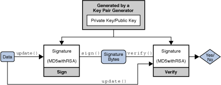
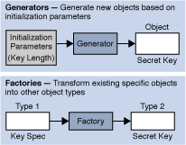
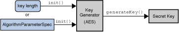
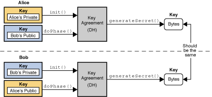

Provider Class
Security ClassSecureRandom
ClassMessageDigest
ClassSignature ClassCipher ClassCipher-based
Classes
Mac ClassKey InterfacesKeyPair ClassKey Specification Interfaces
and Classes
KeyFactory
ClassSecretKeyFactory
ClassKeyPairGenerator
ClassKeyGenerator
ClassKeyAgreement
ClassCertificateFactory ClassMessageDigest
ObjectKey Specifications and
KeyFactoryThe Java platform strongly emphasizes security, including language safety, cryptography, public key infrastructure, authentication, secure communication, and access control.
The JCA is a major piece of the platform, and contains a "provider" architecture and a set of APIs for digital signatures, message digests (hashes), certificates and certificate validation, encryption (symmetric/asymmetric block/stream ciphers), key generation and management, and secure random number generation, to name a few. These APIs allow developers to easily integrate security into their application code. The architecture was designed around the following principles:
Implementation independence: Applications do not need to implement security algorithms. Rather, they can request security services from the Java platform. Security services are implemented in providers (see below), which are plugged into the Java platform via a standard interface. An application may rely on multiple independent providers for security functionality.
Implementation interoperability: Providers are interoperable across applications. Specifically, an application is not bound to a specific provider, and a provider is not bound to a specific application.
Algorithm extensibility: The Java platform includes a number of built-in providers that implement a basic set of security services that are widely used today. However, some applications may rely on emerging standards not yet implemented, or on proprietary services. The Java platform supports the installation of custom providers that implement such services.
Other cryptographic communication libraries available in the JDK use the JCA provider architecture, but are described elsewhere. The Java Secure Socket Extension (JSSE) provides access to Secure Socket Layer (SSL) and Transport Layer Security (TLS) implementations. The Java Generic Security Services (JGSS) (via Kerberos) APIs, and the Simple Authentication and Security Layer (SASL) can also be used for securely exchanging messages between communicating applications.
Prior to JDK 1.4, the JCE was an unbundled product, and as such, the JCA and JCE were regularly referred to as separate, distinct components. As JCE is now bundled in the JDK, the distinction is becoming less apparent. Since the JCE uses the same architecture as the JCA, the JCE should be more properly thought of as a part of the JCA.
The JCA within the JDK includes two software components:
java.security,
javax.crypto, javax.crypto.spec, and
javax.crypto.interfaces.Sun,
SunRsaSign, SunJCE, which contain the
actual cryptographic implementations.Whenever a specific JCA provider is mentioned, it will be referred to explicitly by the provider's name.
WARNING: The JCA makes it easy to incorporate security features into your application. However, this document does not cover the theory of security/cryptography beyond an elementary introduction to concepts necessary to discuss the APIs. This document also does not cover the strengths/weaknesses of specific algorithms, not does it cover protocol design. Cryptography is an advanced topic and one should consult a solid, preferably recent, reference in order to make best use of these tools.
You should always understand what you are doing and why: DO NOT simply copy random code and expect it to fully solve your usage scenario. Many applications have been deployed that contain significant security or performance problems because the wrong tool or algorithm was selected.
The JCA was designed around these principles:
Implementation independence and algorithm independence are complementary; you can use cryptographic services, such as digital signatures and message digests, without worrying about the implementation details or even the algorithms that form the basis for these concepts. While complete algorithm-independence is not possible, the JCA provides standardized, algorithm-specific APIs. When implementation-independence is not desirable, the JCA lets developers indicate a specific implementation.
Algorithm independence is achieved by defining types of
cryptographic "engines" (services), and defining classes that
provide the functionality of these cryptographic engines. These
classes are called engine classes, and examples are the
MessageDigest, Signature, KeyFactory, KeyPairGenerator, and Cipher classes.
Implementation independence is achieved using a "provider"-based
architecture. The term Cryptographic
Service Provider (CSP) (used interchangeably with "provider" in
this document) refers to a package or set of packages that
implement one or more cryptographic services, such as digital
signature algorithms, message digest algorithms, and key conversion
services. A program may simply request a particular type of object
(such as a Signature object) implementing a particular
service (such as the DSA signature algorithm) and get an
implementation from one of the installed providers. If desired, a
program may instead request an implementation from a specific
provider. Providers may be updated transparently to the
application, for example when faster or more secure versions are
available.
Implementation interoperability means that various implementations can work with each other, use each other's keys, or verify each other's signatures. This would mean, for example, that for the same algorithms, a key generated by one provider would be usable by another, and a signature generated by one provider would be verifiable by another.
Algorithm extensibility means that new algorithms that fit in one of the supported engine classes can be added easily.
java.security.Provider is the base class for all
security providers. Each CSP contains an instance of this class
which contains the provider's name and lists all of the security
services/algorithms it implements. When an instance of a particular
algorithm is needed, the JCA framework consults the provider's
database, and if a suitable match is found, the instance is
created.
Providers contain a package (or a set of packages) that supply concrete implementations for the advertised cryptographic algorithms. Each JDK installation has one or more providers installed and configured by default. Additional providers may be added statically or dynamically (see the Provider and Security classes). Clients may configure their runtime environment to specify the provider preference order. The preference order is the order in which providers are searched for requested services when no specific provider is requested.
To use the JCA, an application simply requests a particular type
of object (such as a MessageDigest) and a particular
algorithm or service (such as the "MD5" algorithm), and gets an
implementation from one of the installed providers. Alternatively,
the program can request the objects from a specific provider. Each
provider has a name used to refer to it.
md = MessageDigest.getInstance("MD5");
md = MessageDigest.getInstance("MD5", "ProviderC");
The following figure illustrates requesting an "MD5" message digest implementation. The figure show three different providers that implement various message digest algorithms ("SHA-1", "MD5", "SHA-256", and "SHA-512"). The providers are ordered by preference from left to right (1-3). In the first illustration, an application requests an MD5 algorithm implementation without specifying a provider name. The providers are searched in preference order and the implementation from the first provider supplying that particular algorithm, ProviderB, is returned. In the second figure, the application requests the MD5 algorithm implementation from a specific provider, ProviderC. This time the implementation from ProviderC is returned, even though a provider with a higher preference order, ProviderB, also supplies an MD5 implementation.

Description of Figure MD5 Message Digest Implementation
Cryptographic implementations in the JDK are distributed via
several different providers (Sun,
SunJSSE, SunJCE, SunRsaSign)
primarily for historical reasons, but to a lesser extent by the
type of functionality and algorithms they provide. Other Java
runtime environments may not necessarily contain these Sun
providers, so applications should not request an provider-specific
implementation unless it is known that a particular provider will
be available.
The JCA offers a set of APIs that allow users to query which providers are installed and what services they support.
This architecture also makes it easy for end-users to add
additional providers. Many third party provider implementations are
already available. See The
Provider Class for more information on how
providers are written, installed, and registered.
As mentioned earlier, algorithm independence is achieved by defining a generic high-level Application Programming Interface (API) that all applications use to access a service type. Implementation independence is achieved by having all provider implementations conform to well-defined interfaces. Instances of engine classes are thus "backed" by implementation classes which have the same method signatures. Application calls are routed through the engine class and are delivered to the underlying backing implementation. The implementation handles the request and return the proper results.
The application API methods in each engine class are routed to
the provider's implementations through classes that implement the
corresponding Service Provider Interface (SPI). That is, for each
engine class, there is a corresponding abstract SPI class which
defines the methods that each cryptographic service provider's
algorithm must implement. The name of each SPI class is the same as
that of the corresponding engine class, followed by
Spi. For example, the Signature engine
class provides access to the functionality of a digital signature
algorithm. The actual provider implementation is supplied in a
subclass of SignatureSpi. Applications call the engine
class' API methods, which in turn call the SPI methods in the
actual implementation.
Each SPI class is abstract. To supply the implementation of a particular type of service for a specific algorithm, a provider must subclass the corresponding SPI class and provide implementations for all the abstract methods.
For each engine class in the API, implementation instances are
requested and instantiated by calling the
getInstance() factory method in the engine
class. A factory method is a static method that returns an instance
of a class. The engine classes use the framework provider selection
mechanism described above to obtain the actual backing
implementation (SPI), and then creates the actual engine object.
Each instance of the engine class encapsulates (as a private field)
the instance of the corresponding SPI class, known as the SPI
object. All API methods of an API object are declared final and
their implementations invoke the corresponding SPI methods of the
encapsulated SPI object.
To make this clearer, review the following code and illustration:
import javax.crypto.*;
Cipher c = Cipher.getInstance("AES");
c.init(ENCRYPT_MODE, key);

Description of Example of How Application Retrieves "AES" Cipher Instance
Here an application wants an "AES"
javax.crypto.Cipher instance, and doesn't care which
provider is used. The application calls the
getInstance() factory methods of the
Cipher engine class, which in turn asks the JCA
framework to find the first provider instance that supports "AES".
The framework consults each installed provider, and obtains the
provider's instance of the Provider class. (Recall
that the Provider class is a database of available
algorithms.) The framework searches each provider, finally finding
a suitable entry in CSP3. This database entry points to the
implementation class com.foo.AESCipher which extends
CipherSpi, and is thus suitable for use by the
Cipher engine class. An instance of
com.foo.AESCipher is created, and is encapsulated in a
newly-created instance of javax.crypto.Cipher, which
is returned to the application. When the application now does the
init() operation on the Cipher instance,
the Cipher engine class routes the request into the
corresponding engineInit() backing method in the
com.foo.AESCipher class.
Appendix A lists the Standard Names defined for the Java environment. Other third-party providers may define their own implementations of these services, or even additional services.
A database called a "keystore" can be used to manage a repository of keys and certificates. Keystores are available to applications that need data for authentication, encryption, or signing purposes.
Applications can access a keystore via an implementation of the
KeyStore class, which is in the
java.security package. A default KeyStore
implementation is provided by Sun Microsystems. It implements the
keystore as a file, using a proprietary keystore type (format)
named "jks". Other keystore formats are available, such as "jceks"
which is an alternate proprietary keystore format with much
stronger encryption than "jks", and "pkcs12", which is based on the
RSA
PKCS12 Personal Information Exchange Syntax Standard.
Applications can choose different keystore implementations from different providers, using the same provider mechanism described above.
See the Key Management section for more information.
This section introduces the major JCA APIs.
An engine class provides the interface to a specific type of cryptographic service, independent of a particular cryptographic algorithm or provider. The engines either provide:
The following engine classes are available:
SecureRandom: used to
generate random or pseudo-random numbers.MessageDigest: used
to calculate the message digest (hash) of specified data.Signature: initialized
with keys, these are used to sign data and verify digital
signatures.Cipher: initialized with
keys, these used for encrypting/decrypting data. There are various
types of algorithms: symmetric bulk encryption (e.g. AES, DES,
DESede, Blowfish, IDEA), stream encryption (e.g. RC4), asymmetric
encryption (e.g. RSA), and password-based encryption (PBE).MessageDigests, these also generate hash values, but
are first initialized with keys to protect the integrity of
messages.KeyFactory: used to
convert existing opaque cryptographic keys of type Key into key specifications (transparent
representations of the underlying key material), and vice
versa.SecretKeyFactory:
used to convert existing opaque cryptographic keys of type SecretKey into key specifications
(transparent representations of the underlying key material), and
vice versa. SecretKeyFactorys are specialized
KeyFactorys that create secret (symmetric) keys
only.KeyPairGenerator:
used to generate a new pair of public and private keys suitable for
use with a specified algorithm.KeyGenerator: used to
generate new secret keys for use with a specified algorithm.KeyAgreement: used by
two or more parties to agree upon and establish a specific key to
use for a particular cryptographic operation.AlgorithmParameters: used
to store the parameters for a particular algorithm, including
parameter encoding and decoding.AlgorithmParameterGenerator
: used to generate a set of AlgorithmParameters suitable for a
specified algorithm.KeyStore: used to create
and manage a keystore. A keystore is a database of keys.
Private keys in a keystore have a certificate chain associated with
them, which authenticates the corresponding public key. A keystore
also contains certificates from trusted entities.CertificateFactory: used to
create public key certificates and Certificate Revocation Lists
(CRLs).CertPathBuilder:
used to build certificate chains (also known as certification
paths).CertPathValidator:
used to validate certificate chains.CertStore:
used to retrieve Certificates and CRLs
from a repository.NOTE: A generator creates objects with brand-new contents, whereas a factory creates objects from existing material (for example, an encoding).
This section discusses the core classes and interfaces provided in the JCA:
Provider and Security classes,SecureRandom,
MessageDigest, Signature, Cipher, Mac, KeyFactory, SecretKeyFactory, KeyPairGenerator, KeyGenerator, KeyAgreement, AlgorithmParameters,
AlgorithmParameterGenerator
, KeyStore, and CertificateFactory, engine
classes,Key interfaces and
classes,NOTE: For more information on the CertPathBuilder,
CertPathValidator,
and CertStore
engine classes, please see the Java PKI Programmer's
Guide.
The guide will cover the most useful high-level classes first
(Provider, Security,
SecureRandom, MessageDigest,
Signature, Cipher, and Mac),
then delve into the various support classes. For now, it is
sufficient to simply say that Keys (public, private, and secret)
are generated and represented by the various JCA classes, and are
used by the high-level classes as part of their operation.
This section shows the signatures of the main methods in each
class and interface. Examples for some of these classes
(MessageDigest, Signature,
KeyPairGenerator, SecureRandom,
KeyFactory, and key specification classes) are
supplied in the corresponding Examples
sections.
The complete reference documentation for the relevant Security API packages can be found in the package summaries:
java.securityjavax.cryptojava.security.certjava.security.specjavax.crypto.spec
java.security.interfaces
javax.crypto.interfacesProvider
ClassThe term "Cryptographic Service Provider" (used interchangeably
with "provider" in this document) refers to a package or set of
packages that supply a concrete implementation of a subset of the
JDK Security API cryptography features. The Provider
class is the interface to such a package or set of
packages. It has methods for accessing the provider name, version
number, and other information. Please note that in addition to
registering implementations of cryptographic services, the
Provider class can also be used to register
implementations of other security services that might get defined
as part of the JDK Security API or one of its extensions.
To supply implementations of cryptographic services, an entity
(e.g., a development group) writes the implementation code and
creates a subclass of the Provider class. The
constructor of the Provider subclass sets the values
of various properties; the JDK Security API uses these values to
look up the services that the provider implements. In other words,
the subclass specifies the names of the classes implementing the
services.
Description of Figure Example of Provider Subclass
There are several types of services that can be implemented by provider packages; for more information, see Engine Classes and Algorithms.
The different implementations may have different characteristics. Some may be software-based, while others may be hardware-based. Some may be platform-independent, while others may be platform-specific. Some provider source code may be available for review and evaluation, while some may not. The JCA lets both end-users and developers decide what their needs are.
In this section we explain how end-users install the cryptography implementations that fit their needs, and how developers request the implementations that fit theirs.
NOTE: For information about implementing a provider, see the guide How To Implement a Provider for the Java Cryptography Architecture.
For each engine class in the API, a
implementation instance is requested and instantiated by calling
one of the getInstance methods on the engine class,
specifying the name of the desired algorithm and, optionally, the
name of the provider (or the Provider class) whose
implementation is desired.
static EngineClassName getInstance(String algorithm)
throws NoSuchAlgorithmException
static EngineClassName getInstance(String algorithm, String provider)
throws NoSuchAlgorithmException, NoSuchProviderException
static EngineClassName getInstance(String algorithm, Provider provider)
throws NoSuchAlgorithmException
where EngineClassName is the desired engine type
(MessageDigest/Cipher/etc). For example:
MessageDigest md = MessageDigest.getInstance("MD5");
KeyAgreement ka = KeyAgreement.getInstance("DH", "SunJCE");
return an instance of the "MD5" MessageDigest and "DH" KeyAgreement
objects, respectively.
Appendix A contains the list of names that have been standardized for use with the Java environment. Some providers may choose to also include alias names that also refer to the same algorithm. For example, the "SHA-1" algorithm might be referred to as "SHA1". Applications should use standard names instead of an alias, as not all providers may alias algorithm names in the same way.
NOTE: The algorithm name is not case-sensitive. For example, all the following calls are equivalent:
MessageDigest.getInstance("SHA-1")
MessageDigest.getInstance("sha-1")
MessageDigest.getInstance("sHa-1")
If no provider is specified, getInstance searches
the registered providers for an implementation of the requested
cryptographic service associated with the named algorithm. In any
given Java Virtual Machine (JVM), providers are installed in a given preference
order, the order in which the provider list is searched if a
specific provider is not requested. For example, suppose there are
two providers installed in a JVM, PROVIDER_1 and
PROVIDER_2. Assume that:
PROVIDER_1 implements SHA1withDSA, SHA-1, MD5,
DES, and DES3.PROVIDER_1 has preference order 1 (the highest
priority).PROVIDER_2 implements SHA1withDSA, MD5withRSA,
MD2withRSA, MD2, MD5, RC4, RC5, DES, and RSA.PROVIDER_2 has preference order 2.PROVIDER_1
implementation is returned since PROVIDER_1 has the
highest priority and is searched first.PROVIDER_1 is first searched for it. No implementation
is found, so PROVIDER_2 is searched. Since an
implementation is found, it is returned.NoSuchAlgorithmException is thrown.The getInstance methods that include a provider
argument are for developers who want to specify which provider they
want an algorithm from. A federal agency, for example, will want to
use a provider implementation that has received federal
certification. Let's assume that the SHA1withDSA implementation
from PROVIDER_1 has not received such certification,
while the DSA implementation of PROVIDER_2 has
received it.
A federal agency program would then have the following call,
specifying PROVIDER_2 since it has the certified
implementation:
Signature dsa = Signature.getInstance("SHA1withDSA", "PROVIDER_2");
In this case, if PROVIDER_2 was not installed, a
NoSuchProviderException would be thrown, even if
another installed provider implements the algorithm requested.
A program also has the option of getting a list of all the
installed providers (using the getProviders method in
the Security class) and
choosing one from the list.
NOTE: General purpose applications SHOULD NOT request cryptographic services from specific providers. Otherwise, applications are tied to specific providers which may not be available on other Java implementations. They also might not be able to take advantage of available optimized providers (for example hardware accelerators via PKCS11 or native OS implementations such as Microsoft's MSCAPI) that have a higher preference order than the specific requested provider.
In order to be used, a cryptographic provider must first be
installed, then registered either statically or dynamically. There
are a variety of Sun providers shipped with this release
(SUN, SunJCE, SunJSSE,
SunRsaSign, etc.) that are already installed and
registered. The following sections describe how to install and
register additional providers.
There are two possible ways to install the provider classes:
Place a zip or JAR file containing the classes anywhere in your classpath. Some algorithms types (Ciphers) require the provider be a signed Jar file.
The provider will be considered an installed extension if it is placed in the standard extension directory. In the JDK, that would be located in:
<java-home>/lib/ext<java-home>\lib\extHere <java-home> refers to the directory where
the runtime software is installed, which is the top-level directory
of the Java Runtime Environment (JRE) or the jre directory
in the Java JDK software. For example, if you have JDK 6 installed
on Solaris in a directory named /home/user1/JDK1.6.0,
or on Microsoft Windows in a directory named
C:\Java\JDK1.6.0, then you need to install the JAR
file in the following directory:
/home/user1/JDK1.6.0/jre/lib/extC:\JDK1.6.0\jre\lib\extSimilarly, if you have the JRE 6 installed on Solaris in a
directory named /home/user1/jre1.6.0, or on Microsoft
Windows in a directory named C:\jre1.6.0, you need to
install the JAR file in the following directory:
/home/user1/jre1.6.0/lib/extC:\jre1.6.0\lib\extThe next step is to add the provider to your list of registered providers. Providers can be registered statically by editing a security properties configuration file before running a Java application, or dynamically by calling a method at runtime. To prevent the installation of rogue providers being added to the runtime environment, applications attempting to dynamically register a provider must possess the appropriate runtime privilege.
The configuration file is located in the following location:
<java-home>/lib/security/java.security<java-home>\lib\security\java.securityFor each registered provider, this file should have a statement of the following form:
security.provider.n=masterClassName
This declares a provider, and specifies its preference order n. The preference order is the order in which providers are searched for requested algorithms (when no specific provider is requested). The order is 1-based: 1 is the most preferred, followed by 2, and so on.
masterClassName must specify the fully
qualified name of provider's master class. The provider's
documentation will specify its master class. This class is always a
subclass of the Provider class. The subclass
constructor sets the values of various properties that are required
for the Java Cryptography API to look up the algorithms or other
facilities the provider implements.
The JDK comes standard with automatically installed and
configured providers such as "SUN" and "SunJCE". The "SUN"
provider's master class is the SUN class in the
sun.security.provider package, and the corresponding
java.security file entry is as follows:
security.provider.5=sun.security.provider.Sun
To utilize another JCA provider, add a line referencing the alternate provider, specify the preference order ( making corresponding adjustments to the other providers' orders, if needed).
Suppose that the master class of CompanyX's provider is
com.companyx.provider.ProviderX, and that you would
like to configure this provider as the eighth most-preferred. To do
so, you would add the following line to the
java.security file:
security.provider.8=com.companyx.provider.ProviderX
addProvider or insertProviderAt method in
the Security class. This type of registration is not
persistent across VM instances, and can only be done by "trusted"
programs with the appropriate privilege. See Security.
Whenever encryption providers are used (that is, those that supply implementations of Cipher, KeyAgreement, KeyGenerator, Mac, or SecretKeyFactory), and the provider is not an installed extension Permissions may need to be granted for when applets or applications using JCA are run while a security manager is installed. There is typically a security manager installed whenever an applet is running, and a security manager may be installed for an application either via code in the application itself or via a command-line argument. Permissions do not need to be granted to installed extensions, since the default system policy configuration file grants all permissions to installed extensions (that is, installed in the extensions directory).
The documentation from the vendor of each provider you will be using should include information as to which permissions it requires, and how to grant such permissions. For example, the following permissions may be needed by a provider if it is not an installed extension and a security manager is installed:
java.lang.RuntimePermission "getProtectionDomain"
to get class protection domains. The provider may need to get its
own protection domain in the process of doing self-integrity
checking.java.security.SecurityPermission
"putProviderProperty.{name}" to set provider properties,
where {name} is replaced by the actual provider
name.For example, a sample statement granting permissions to a
provider whose name is "MyJCE" and whose code is in
myjce_provider.jar appears below. Such a statement
could appear in a policy file. In this example, the
myjce_provider.jar file is assumed to be in the
/localWork directory.
grant codeBase "file:/localWork/myjce_provider.jar" {
permission java.lang.RuntimePermission "getProtectionDomain";
permission java.security.SecurityPermission
"putProviderProperty.MyJCE";
};
Provider Class MethodsEach Provider class instance has a (currently
case-sensitive) name, a version number, and a string description of
the provider and its services. You can query the
Provider instance for this information by calling the
following methods:
public String getName() public double getVersion() public String getInfo()
Security
ClassThe Security class manages installed providers and
security-wide properties. It only contains static methods and is
never instantiated. The methods for adding or removing providers,
and for setting Security properties, can only be
executed by a trusted program. Currently, a "trusted program" is
either
Code being executed is always considered to come from a particular "code source". The code source includes not only the location (URL) where the code originated from, but also a reference to any public key(s) corresponding to the private key(s) that may have been used to sign the code. Public keys in a code source are referenced by (symbolic) alias names from the user's keystore.
In a policy configuration file, a code source is represented by
two components: a code base (URL), and an alias name (preceded by
signedBy), where the alias name identifies the
keystore entry containing the public key that must be used to
verify the code's signature.
Each "grant" statement in such a file grants a specified code source a set of permissions, specifying which actions are allowed.
Here is a sample policy configuration file:
grant codeBase "file:/home/sysadmin/", signedBy "sysadmin" {
permission java.security.SecurityPermission "insertProvider.*";
permission java.security.SecurityPermission "removeProvider.*";
permission java.security.SecurityPermission "putProviderProperty.*";
};
This configuration file specifies that code loaded from a signed
JAR file from beneath the /home/sysadmin/ directory on
the local file system can add or remove providers or set provider
properties. (Note that the signature of the JAR file can be
verified using the public key referenced by the alias name
sysadmin in the user's keystore.)
Either component of the code source (or both) may be missing.
Here's an example of a configuration file where the
codeBase is omitted:
grant signedBy "sysadmin" {
permission java.security.SecurityPermission "insertProvider.*";
permission java.security.SecurityPermission "removeProvider.*";
};
If this policy is in effect, code that comes in a JAR File signed
by sysadmin can add/remove providers--regardless of
where the JAR File originated.
Here's an example without a signer:
grant codeBase "file:/home/sysadmin/" {
permission java.security.SecurityPermission "insertProvider.*";
permission java.security.SecurityPermission "removeProvider.*";
};
In this case, code that comes from anywhere within the
/home/sysadmin/ directory on the local filesystem can
add/remove providers. The code does not need to be signed.
An example where neither codeBase nor
signedBy is included is:
grant {
permission java.security.SecurityPermission "insertProvider.*";
permission java.security.SecurityPermission "removeProvider.*";
};
Here, with both code source components missing, any code
(regardless of where it originates, or whether or not it is signed,
or who signed it) can add/remove providers. Obviously, this is
definitely NOT recommended, as this grant could open a
security hole. Untrusted code could install a Provider, thus
affecting later code that is depending on a properly functioning
implementation. (For example, a rogue Cipher object
might capture and store the sensitive information it receives.)
The following tables summarize the methods in the
Security class you can use to query which
Providers are installed, as well as to install or
remove providers at runtime.
| Method | Description |
|---|---|
static Provider[] getProviders() |
Returns an array containing all the installed providers
(technically, the Provider subclass for each package
provider). The order of the Providers in the array is
their preference order. |
static Provider getProvider |
Returns the Provider named
providerName. It returns null if the
Provider is not found. |
| Method | Description |
|---|---|
static int addProvider(Provider provider) |
Adds a Provider to the end of the list of
installed Providers. It returns the preference
position in which the Provider was added, or
-1 if the Provider was not added because
it was already installed. |
static int insertProviderAt (Provider provider, int
position) |
Adds a new Provider at a specified position. If
the given provider is installed at the requested position, the
provider formerly at that position and all providers with a
position greater than position are shifted up one
position (towards the end of the list). This method returns the
preference position in which the Provider was added,
or -1 if the Provider was not added
because it was already installed. |
| Method | Description |
|---|---|
static void removeProvider(String name) |
Removes the Provider with the specified name. It
returns silently if the provider is not installed. When the
specified provider is removed, all providers located at a position
greater than where the specified provider was are shifted down one
position (towards the head of the list of installed
providers). |
NOTE: If you want to change the preference position of a provider, you must first remove it, and then insert it back in at the new preference position.
The Security class maintains a list of system-wide
security properties. These properties are similar to the
System properties, but are security-related. These
properties can be set statically or dynamically. We have already
seen an example of static security properties (that is, registering
a provider statically via the "security.provider.i"
security property). If you want to set properties dynamically,
trusted programs can use the following methods:
static String getProperty(String key) static void setProperty(String key, String datum)Note: the list of security providers is established during VM startup, therefore the methods described above must be used to alter the provider list.
As a reminder, the configuration file is located in the following location:
<java-home>/lib/security/java.security<java-home>\lib\security\java.securitySecureRandom ClassThe SecureRandom class is an engine class that provides the functionality of a
Random Number Generator (RNG). It differs from the
java.lang.Random class in that it produces
cryptographically strong random numbers. If there is insufficient
randomness in a generator, it makes it much easier to compromise
your protection mechanisms. Random numbers are used throughout
cryptography, such as generating cryptographic keys, algorithmic
parameters, and so on.
All Java SE implementations must indicate the strongest (most
random) implementation of SecureRandom that they
provide in the securerandom.strongAlgorithms property
of the java.security.Security class. This
implementation can be used when a particularly strong random value
is required.
Description of The SecureRandom Class
SecureRandom ObjectThere are several ways to obtain an instance of
SecureRandom:
All Java SE implementations provide a default
SecureRandom using the no-argument constructor:
new SecureRandom().
To get a specific implementation of SecureRandom,
use one of the getInstance() static factory
methods.
Use the getInstanceStrong() method to obtain a
strong SecureRandom implementation as defined by the
securerandom.strongAlgorithms property of the
java.security.Security class. This property lists
platform implementations that are suitable for generating important
values.
SecureRandom ObjectThe SecureRandom implementation attempts to
completely randomize the internal state of the generator itself
unless the caller follows the call to a getInstance
method with a call to one of the setSeed methods:
synchronized public void setSeed(byte[] seed) public void setSeed(long seed)
Once the SecureRandom object has been seeded, it
will produce bits as random as the original seeds.
At any time a SecureRandom object may be re-seeded
using one of the setSeed methods. The given seed
supplements, rather than replaces, the existing seed; therefore,
repeated calls are guaranteed never to reduce randomness.
SecureRandom ObjectTo get random bytes, a caller simply passes an array of any length, which is then filled with random bytes:
synchronized public void nextBytes(byte[] bytes)
If desired, it is possible to invoke the
generateSeed method to generate a given number of seed
bytes (to seed other random number generators, for example):
byte[] generateSeed(int numBytes)
MessageDigest ClassThe MessageDigest class is an engine class designed to provide the functionality of
cryptographically secure message digests such as SHA-1 or MD5. A
cryptographically secure message digest takes arbitrary-sized input
(a byte array), and generates a fixed-size output, called a
digest or hash.
Description of Figure The MessageDigest Class
For example, the MD5 algorithm produces a 16 byte digest, and SHA1's is 20 bytes.
A digest has two properties:
Message digests are used to produce unique and reliable identifiers of data. They are sometimes called "checksums" or the "digital fingerprints" of the data. Changes to just one bit of the message should produce a different digest value.
Message digests have many uses and can determine when data has been modified, intentionally or not. Recently, there has been considerable effort to determine if there are any weaknesses in popular algorithms, with mixed results. When selecting a digest algorithm, one should always consult a recent reference to determine its status and appropriateness for the task at hand.
MessageDigest ObjectThe first step for computing a digest is to create a message
digest instance. MessageDigest objects are obtained by
using one of the getInstance() static factory
methods in the MessageDigest class. The factory
method returns an initialized message digest object. It thus does
not need further initialization.
The next step for calculating the digest of some data is to
supply the data to the initialized message digest object. It can be
provided all at once, or in chunks. Pieces can be fed to the
message digest by calling one of the update
methods:
void update(byte input) void update(byte[] input) void update(byte[] input, int offset, int len)
After the data chunks have been supplied by calls to
update, the digest is computed using a call to one of
the digest methods:
byte[] digest() byte[] digest(byte[] input) int digest(byte[] buf, int offset, int len)
The first method return the computed digest. The second method
does a final update(input) with the input byte array
before calling digest(), which returns the digest byte
array. The last method stores the computed digest in the provided
buffer buf, starting at offset.
len is the number of bytes in buf
allotted for the digest, the method returns the number of bytes
actually stored in buf. If there is not enough room in
the buffer, the method will throw an exception.
Please see the Computing a
MessageDigest example in the Code Examples section for more details.
Signature
ClassThe Signature class is an engine
class designed to provide the functionality of a cryptographic
digital signature algorithm such as DSA or RSAwithMD5. A
cryptographically secure signature algorithm takes arbitrary-sized
input and a private key and generates a relatively short (often
fixed-size) string of bytes, called the signature, with the
following properties:
It can also be used to verify whether or not an alleged signature is in fact the authentic signature of the data associated with it.
Description of Figure The Signature Class
A Signature object is initialized for signing with
a Private Key and is given the data to be signed. The resulting
signature bytes are typically kept with the signed data. When
verification is needed, another Signature object is
created and initialized for verification and given the
corresponding Public Key. The data and the signature bytes are fed
to the signature object, and if the data and signature match, the
Signature object reports success.
Even though a signature seems similar to a message digest, they have very different purposes in the type of protection they provide. In fact, algorithms such as "SHA1WithRSA" use the message digest "SHA1" to initially "compress" the large data sets into a more manageable form, then sign the resulting 20 byte message digest with the "RSA" algorithm.
Please see the Examples section for an example of signing and verifying data.
Signature Object StatesSignature objects are modal objects. This means
that a Signature object is always in a given state,
where it may only do one type of operation. States are represented
as final integer constants defined in their respective classes.
The three states a Signature object may have
are:
UNINITIALIZEDSIGNVERIFYSignature object is in the
UNINITIALIZED state. The Signature class
defines two initialization methods, initSign and
initVerify, which change the state to
SIGN and VERIFY, respectively.
Signature ObjectThe first step for signing or verifying a signature is to create
a Signature instance. Signature objects
are obtained by using one of the Signature getInstance() static factory
methods.
Signature ObjectA Signature object must be initialized before it is
used. The initialization method depends on whether the object is
going to be used for signing or for verification.
If it is going to be used for signing, the object must first be initialized with the private key of the entity whose signature is going to be generated. This initialization is done by calling the method:
final void initSign(PrivateKey privateKey)This method puts the
Signature object in the
SIGN state.
If instead the Signature object is going to be used
for verification, it must first be initialized with the public key
of the entity whose signature is going to be verified. This
initialization is done by calling either of these methods:
final void initVerify(PublicKey publicKey)
final void initVerify(Certificate certificate)
This method puts the Signature object in the
VERIFY state.
If the Signature object has been initialized for
signing (if it is in the SIGN state), the data to be
signed can then be supplied to the object. This is done by making
one or more calls to one of the update methods:
final void update(byte b) final void update(byte[] data) final void update(byte[] data, int off, int len)
Calls to the update method(s) should be made until
all the data to be signed has been supplied to the
Signature object.
To generate the signature, simply call one of the
sign methods:
final byte[] sign() final int sign(byte[] outbuf, int offset, int len)
The first method returns the signature result in a byte array. The second stores the signature result in the provided buffer outbuf, starting at offset. len is the number of bytes in outbuf allotted for the signature. The method returns the number of bytes actually stored.
Signature encoding is algorithm specific. See the Standard Names document for more information about the use of ASN.1 encoding in the Java Cryptography Architecture.
A call to a sign method resets the signature object
to the state it was in when previously initialized for signing via
a call to initSign. That is, the object is reset and
available to generate another signature with the same private key,
if desired, via new calls to update and
sign.
Alternatively, a new call can be made to initSign
specifying a different private key, or to initVerify
(to initialize the Signature object to verify a
signature).
If the Signature object has been initialized for
verification (if it is in the VERIFY state), it can
then verify if an alleged signature is in fact the authentic
signature of the data associated with it. To start the process, the
data to be verified (as opposed to the signature itself) is
supplied to the object. The data is passed to the object by calling
one of the update methods:
final void update(byte b) final void update(byte[] data) final void update(byte[] data, int off, int len)
Calls to the update method(s) should be made until
all the data to be verified has been supplied to the
Signature object. The signature can now be verified by
calling one of the verify methods:
final boolean verify(byte[] signature) final boolean verify(byte[] signature, int offset, int length)
The argument must be a byte array containing the signature. This
byte array would hold the signature bytes which were returned by a
previous call to one of the sign methods.
The verify method returns a boolean
indicating whether or not the encoded signature is the authentic
signature of the data supplied to the update
method(s).
A call to the verify method resets the signature
object to its state when it was initialized for verification via a
call to initVerify. That is, the object is reset and
available to verify another signature from the identity whose
public key was specified in the call to
initVerify.
Alternatively, a new call can be made to initVerify
specifying a different public key (to initialize the
Signature object for verifying a signature from a
different entity), or to initSign (to initialize the
Signature object for generating a signature).
The Cipher class provides the functionality of a
cryptographic cipher used for encryption and decryption. Encryption
is the process of taking data (called cleartext) and a
key, and producing data (ciphertext) meaningless to a
third-party who does not know the key. Decryption is the inverse
process: that of taking ciphertext and a key and producing
cleartext.
Description of Figure The Cipher Class
There are two major types of encryption: symmetric (also known as secret key), and asymmetric (or public key cryptography). In symmetric cryptography, the same secret key to both encrypt and decrypt the data. Keeping the key private is critical to keeping the data confidential. On the other hand, asymmetric cryptography uses a public/private key pair to encrypt data. Data encrypted with one key is decrypted with the other. A user first generates a public/private key pair, and then publishes the public key in a trusted database that anyone can access. A user who wishes to communicate securely with that user encrypts the data using the retrieved public key. Only the holder of the private key will be able to decrypt. Keeping the private key confidential is critical to this scheme.
Asymmetric algorithms (such as RSA) are generally much slower than symmetric ones. These algorithms are not designed for efficiently protecting large amounts of data. In practice, asymmetric algorithms are used to exchange smaller secret keys which are used to initialize symmetric algorithms.
There are two major types of ciphers: block and stream. Block ciphers process entire blocks at a time, usually many bytes in length. If there is not enough data to make a complete input block, the data must be padded: that is, before encryption, dummy bytes must be added to make a multiple of the cipher's block size. These bytes are then stripped off during the decryption phase. The padding can either be done by the application, or by initializing a cipher to use a padding type such as "PKCS5PADDING". In contrast, stream ciphers process incoming data one small unit (typically a byte or even a bit) at a time. This allows for ciphers to process an arbitrary amount of data without padding.
When encrypting using a simple block cipher, two identical blocks of plaintext will always produce an identical block of cipher text. Cryptanalysts trying to break the ciphertext will have an easier job if they note blocks of repeating text. In order to add more complexity to the text, feedback modes use the previous block of output to alter the input blocks before applying the encryption algorithm. The first block will need an initial value, and this value is called the initialization vector (IV). Since the IV simply alters the data before any encryption, the IV should be random but does not necessarily need to be kept secret. There are a variety of modes, such as CBC (Cipher Block Chaining), CFB (Cipher Feedback Mode), and OFB (Output Feedback Mode). ECB (Electronic Cookbook Mode) is a mode with no feedback.
Some algorithms such as AES and RSA allow for keys of different lengths, but others are fixed, such as DES and 3DES. Encryption using a longer key generally implies a stronger resistance to message recovery. As usual, there is a trade off between security and time, so choose the key length appropriately.
Most algorithms use binary keys. Most humans do not have the ability to remember long sequences of binary numbers, even when represented in hexadecimal. Character passwords are much easier to recall. Because character passwords are generally chosen from a small number of characters (for example, [a-zA-Z0-9]), protocols such as "Password-Based Encryption" (PBE) have been defined which take character passwords and generate strong binary keys. In order to make the task of getting from password to key very time-consuming for an attacker (via so-called "dictionary attacks" where common dictionary word->value mappings are precomputed), most PBE implementations will mix in a random number, known as a salt, to increase the key randomness.
Newer cipher modes such as Authenticated Encryption with Associated Data (AEAD) (for example, Galois/Counter Mode (GCM)) encrypt data and authenticate the resulting message simultaneously. Additional Associated Data (AAD) can be used during the calculation of the resulting AEAD tag (Mac), but this AAD data is not output as ciphertext. (For example, some data might not need to be kept confidential, but should figure into the tag calculation to detect modifications.) The Cipher.updateAAD() methods can be used to include AAD in the tag calculations.
AES Cipher with GCM is an AEAD Cipher which has different usage patterns than the non-AEAD ciphers. Apart from the regular data, it also takes AAD which is optional for encryption/decryption but AAD must be supplied before data for encryption/decryption. In addition, in order to use GCM securely, callers should not re-use key and IV combinations for encryption. This means that the cipher object should be explicitly re-initialized with a different set of parameters every time for each encryption operation.
SecretKey myKey = ...
byte[] myAAD = ...
byte[] plainText = ...
int myTLen = ...
byte[] myIv = ...
GCMParameterSpec myParams = new GCMParameterSpec(myTLen, myIv);
Cipher c = Cipher.getInstance("AES/GCM/NoPadding");
c.init(Cipher.ENCRYPT_MODE, myKey, myParams);
// AAD is optional, if present, it must be supplied before any update/doFinal calls.
c.updateAAD(myAAD); // if AAD is non-null
byte[] cipherText = new byte[c.getOutputSize(plainText.length)];
c.doFinal(plainText, 0, plainText.length, cipherText); // conclusion of encryption operation
// To decrypt, same AAD and GCM parameters must be supplied
c.init(Cipher.DECRYPT_MODE, myKey, myParams);
c.updateAAD(myAAD);
byte[] recoveredText = c.doFinal(cipherText);
// MUST CHANGE IV VALUE if the same key were to be used again for encryption
byte[] newIv = ...;
myParams = new GCMParameterSpec(myTLen, newIv);
Cipher objects are obtained by using one of the
Cipher getInstance() static factory
methods. Here, the algorithm name is slightly different than
with other engine classes, in that it specifies not just an
algorithm name, but a "transformation". A transformation is a string that describes the
operation (or set of operations) to be performed on the given input
to produce some output. A transformation always includes the name
of a cryptographic algorithm (e.g., DES), and may be
followed by a mode and padding scheme.
A transformation is of the form:
For example, the following are valid transformations:
"DES/CBC/PKCS5Padding"
"DES"
If just a transformation name is specified, the system will determine if there is an implementation of the requested transformation available in the environment, and if there is more than one, returns there is a preferred one.
If both a transformation name and a package provider are specified, the system will determine if there is an implementation of the requested transformation in the package requested, and throw an exception if there is not.
It is recommended to use a transformation that fully specifies the algorithm, mode, and padding. By not doing so, the provider will use a default. For example, the SunJCE and SunPKCS11 providers use ECB as the default mode, and PKCS5Padding as the default padding for many symmetric ciphers.
This means that in the case of the
SunJCE provider:
Cipher c1 = Cipher.getInstance("DES/ECB/PKCS5Padding");
and
Cipher c1 = Cipher.getInstance("DES");
are equivalent statements.
Note: ECB mode is the easiest block cipher mode to use and is the default in the JDK/JRE. ECB works well for single blocks of data, but absolutely should not be used for multiple data blocks.
Using modes such as CFB and OFB, block ciphers can encrypt data
in units smaller than the cipher's actual block size. When
requesting such a mode, you may optionally specify the number of
bits to be processed at a time by appending this number to the mode
name as shown in the "DES/CFB8/NoPadding" and
"DES/OFB32/PKCS5Padding" transformations. If no such number
is specified, a provider-specific default is used. (For example,
the SunJCE provider uses a default of 64 bits for
DES.) Thus, block ciphers can be turned into byte-oriented stream
ciphers by using an 8 bit mode such as CFB8 or OFB8.
Appendix A of this document contains a list of standard names that can be used to specify the algorithm name, mode, and padding scheme components of a transformation.
The objects returned by factory methods are uninitialized, and must be initialized before they become usable.
A Cipher object obtained via getInstance must be
initialized for one of four modes, which are defined as final
integer constants in the Cipher class. The modes can
be referenced by their symbolic names, which are shown below along
with a description of the purpose of each mode:
java.security.Key into bytes so that
the key can be securely transported.java.security.Key object.Each of the Cipher initialization methods takes an operational
mode parameter (opmode), and initializes the Cipher
object for that mode. Other parameters include the key
(key) or certificate containing the key
(certificate), algorithm parameters
(params), and a source of randomness
(random).
To initialize a Cipher object, call one of the following
init methods:
public void init(int opmode, Key key);
public void init(int opmode, Certificate certificate);
public void init(int opmode, Key key, SecureRandom random);
public void init(int opmode, Certificate certificate,
SecureRandom random);
public void init(int opmode, Key key,
AlgorithmParameterSpec params);
public void init(int opmode, Key key,
AlgorithmParameterSpec params, SecureRandom random);
public void init(int opmode, Key key,
AlgorithmParameters params);
public void init(int opmode, Key key,
AlgorithmParameters params, SecureRandom random);
If a Cipher object that requires parameters (e.g., an
initialization vector) is initialized for encryption, and no
parameters are supplied to the init method, the
underlying cipher implementation is supposed to supply the required
parameters itself, either by generating random parameters or by
using a default, provider-specific set of parameters.
However, if a Cipher object that requires parameters is
initialized for decryption, and no parameters are supplied to the
init method, an InvalidKeyException or
InvalidAlgorithmParameterException exception will be
raised, depending on the init method that has been
used.
See the section about Managing Algorithm Parameters for more details.
The same parameters that were used for encryption must be used for decryption.
Note that when a Cipher object is initialized, it loses all previously-acquired state. In other words, initializing a Cipher is equivalent to creating a new instance of that Cipher, and initializing it. For example, if a Cipher is first initialized for decryption with a given key, and then initialized for encryption, it will lose any state acquired while in decryption mode.
Data can be encrypted or decrypted in one step (single-part operation) or in multiple steps (multiple-part operation). A multiple-part operation is useful if you do not know in advance how long the data is going to be, or if the data is too long to be stored in memory all at once.
To encrypt or decrypt data in a single step, call one of the
doFinal methods:
public byte[] doFinal(byte[] input);
public byte[] doFinal(byte[] input, int inputOffset, int inputLen);
public int doFinal(byte[] input, int inputOffset,
int inputLen, byte[] output);
public int doFinal(byte[] input, int inputOffset,
int inputLen, byte[] output, int outputOffset)
To encrypt or decrypt data in multiple steps, call one of the
update methods:
public byte[] update(byte[] input);
public byte[] update(byte[] input, int inputOffset, int inputLen);
public int update(byte[] input, int inputOffset, int inputLen,
byte[] output);
public int update(byte[] input, int inputOffset, int inputLen,
byte[] output, int outputOffset)
A multiple-part operation must be terminated by one of the above
doFinal methods (if there is still some input data
left for the last step), or by one of the following
doFinal methods (if there is no input data left for
the last step):
public byte[] doFinal();
public int doFinal(byte[] output, int outputOffset);
All the doFinal methods take care of any necessary
padding (or unpadding), if padding (or unpadding) has been
requested as part of the specified transformation.
A call to doFinal resets the Cipher object to the
state it was in when initialized via a call to init.
That is, the Cipher object is reset and available to encrypt or
decrypt (depending on the operation mode that was specified in the
call to init) more data.
Wrapping a key enables secure transfer of the key from one place to another.
The wrap/unwrap API makes it more convenient to
write code since it works with key objects directly. These methods
also enable the possibility of secure transfer of hardware-based
keys.
To wrap a Key, first initialize the Cipher object for WRAP_MODE, and then call the following:
public final byte[] wrap(Key key);
If you are supplying the wrapped key bytes (the result of
calling wrap) to someone else who will unwrap them, be
sure to also send additional information the recipient will need in
order to do the unwrap:
Cipher.SECRET_KEY, Cipher.PRIVATE_KEY, or
Cipher.PUBLIC_KEY).The key algorithm name can be determined by calling the
getAlgorithm method from the Key interface:
public String getAlgorithm();
To unwrap the bytes returned by a previous call to
wrap, first initialize a Cipher object for
UNWRAP_MODE, then call the following:
public final Key unwrap(byte[] wrappedKey,
String wrappedKeyAlgorithm,
int wrappedKeyType));
Here, wrappedKey is the bytes returned from the
previous call to wrap, wrappedKeyAlgorithm is the
algorithm associated with the wrapped key, and
wrappedKeyType is the type of the wrapped key. This
must be one of Cipher.SECRET_KEY,
Cipher.PRIVATE_KEY, or
Cipher.PUBLIC_KEY.
The parameters being used by the underlying Cipher
implementation, which were either explicitly passed to the
init method by the application or generated by the
underlying implementation itself, can be retrieved from the Cipher
object by calling its getParameters method, which
returns the parameters as a
java.security.AlgorithmParameters object (or
null if no parameters are being used). If the
parameter is an initialization vector (IV), it can also be
retrieved by calling the getIV method.
In the following example, a Cipher object implementing password-based encryption (PBE) is initialized with just a key and no parameters. However, the selected algorithm for password-based encryption requires two parameters - a salt and an iteration count. Those will be generated by the underlying algorithm implementation itself. The application can retrieve the generated parameters from the Cipher object as follows:
import javax.crypto.*;
import java.security.AlgorithmParameters;
// get cipher object for password-based encryption
Cipher c = Cipher.getInstance("PBEWithHmacSHA256AndAES_256");
// initialize cipher for encryption, without supplying
// any parameters. Here, "myKey" is assumed to refer
// to an already-generated key.
c.init(Cipher.ENCRYPT_MODE, myKey);
// encrypt some data and store away ciphertext
// for later decryption
byte[] cipherText = c.doFinal("This is just an example".getBytes());
// retrieve parameters generated by underlying cipher
// implementation
AlgorithmParameters algParams = c.getParameters();
// get parameter encoding and store it away
byte[] encodedAlgParams = algParams.getEncoded();
The same parameters that were used for encryption must be used for decryption. They can be instantiated from their encoding and used to initialize the corresponding Cipher object for decryption, as follows:
import javax.crypto.*;
import java.security.AlgorithmParameters;
// get parameter object for password-based encryption
AlgorithmParameters algParams;
algParams = AlgorithmParameters.getInstance("PBEWithHmacSHA256AndAES_256");
// initialize with parameter encoding from above
algParams.init(encodedAlgParams);
// get cipher object for password-based encryption
Cipher c = Cipher.getInstance("PBEWithHmacSHA256AndAES_256");
// initialize cipher for decryption, using one of the
// init() methods that takes an AlgorithmParameters
// object, and pass it the algParams object from above
c.init(Cipher.DECRYPT_MODE, myKey, algParams);
If you did not specify any parameters when you initialized a
Cipher object, and you are not sure whether or not the underlying
implementation uses any parameters, you can find out by simply
calling the getParameters method of your Cipher object
and checking the value returned. A return value of
null indicates that no parameters were used.
The following cipher algorithms implemented by the
SunJCE provider use parameters:
javax.crypto.spec.IvParameterSpec class can be used to
initialize a Cipher object with a given IV.javax.crypto.spec.PBEParameterSpec class can be used
to initialize a Cipher object implementing a PBE algorithm (for example: PBEWithHmacSHA256AndAES_256) with a
given salt and iteration count.Note that you do not have to worry about storing or transferring
any algorithm parameters for use by the decryption operation if you
use the SealedObject
class. This class attaches the parameters used for sealing
(encryption) to the encrypted object contents, and uses the same
parameters for unsealing (decryption).
Some of the update and doFinal methods
of Cipher allow the caller to specify the output buffer into which
to encrypt or decrypt the data. In these cases, it is important to
pass a buffer that is large enough to hold the result of the
encryption or decryption operation.
The following method in Cipher can be used to determine how big the output buffer should be:
public int getOutputSize(int inputLen)
Cipher-based ClassesThere are some helper classes which internally use
Ciphers to provide easy access to common cipher
uses.
This class is a FilterInputStream that encrypts or
decrypts the data passing through it. It is composed of an
InputStream, or one of its subclasses, and a
Cipher. CipherInputStream represents a secure input
stream into which a Cipher object has been interposed. The
read methods of CipherInputStream return data that are
read from the underlying InputStream but have additionally been
processed by the embedded Cipher object. The Cipher object must be
fully initialized before being used by a CipherInputStream.
For example, if the embedded Cipher has been initialized for decryption, the CipherInputStream will attempt to decrypt the data it reads from the underlying InputStream before returning them to the application.
This class adheres strictly to the semantics, especially the
failure semantics, of its ancestor classes
java.io.FilterInputStream and
java.io.InputStream. This class has exactly those
methods specified in its ancestor classes, and overrides them all,
so that the data are additionally processed by the embedded cipher.
Moreover, this class catches all exceptions that are not thrown by
its ancestor classes. In particular, the skip(long)
method skips only data that has been processed by the Cipher.
It is crucial for a programmer using this class not to use methods that are not defined or overridden in this class (such as a new method or constructor that is later added to one of the super classes), because the design and implementation of those methods are unlikely to have considered security impact with regard to CipherInputStream.
As an example of its usage, suppose cipher1 has
been initialized for encryption. The code below demonstrates how to
use a CipherInputStream containing that cipher and a
FileInputStream in order to encrypt input stream data:
FileInputStream fis;
FileOutputStream fos;
CipherInputStream cis;
fis = new FileInputStream("/tmp/a.txt");
cis = new CipherInputStream(fis, cipher1);
fos = new FileOutputStream("/tmp/b.txt");
byte[] b = new byte[8];
int i = cis.read(b);
while (i != -1) {
fos.write(b, 0, i);
i = cis.read(b);
}
fos.close();
The above program reads and encrypts the content from the file
/tmp/a.txt and then stores the result (the encrypted
bytes) in /tmp/b.txt.
The following example demonstrates how to easily connect several
instances of CipherInputStream and FileInputStream. In this
example, assume that cipher1 and cipher2
have been initialized for encryption and decryption (with
corresponding keys), respectively.
FileInputStream fis;
FileOutputStream fos;
CipherInputStream cis1, cis2;
fis = new FileInputStream("/tmp/a.txt");
cis1 = new CipherInputStream(fis, cipher1);
cis2 = new CipherInputStream(cis1, cipher2);
fos = new FileOutputStream("/tmp/b.txt");
byte[] b = new byte[8];
int i = cis2.read(b);
while (i != -1) {
fos.write(b, 0, i);
i = cis2.read(b);
}
fos.close();
The above program copies the content from file
/tmp/a.txt to /tmp/b.txt, except that the
content is first encrypted and then decrypted back when it is read
from /tmp/a.txt. Of course since this program simply
encrypts text and decrypts it back right away, it's actually not
very useful except as a simple way of illustrating chaining of
CipherInputStreams.
Note that the read methods of the CipherInputStream
will block until data is returned from the underlying cipher. If a
block cipher is used, a full block of cipher text will have to be
obtained from the underlying InputStream.
This class is a FilterOutputStream that encrypts or
decrypts the data passing through it. It is composed of an
OutputStream, or one of its subclasses, and a
Cipher. CipherOutputStream represents a secure output
stream into which a Cipher object has been interposed. The
write methods of CipherOutputStream first process the
data with the embedded Cipher object before writing them out to the
underlying OutputStream. The Cipher object must be fully
initialized before being used by a CipherOutputStream.
For example, if the embedded Cipher has been initialized for encryption, the CipherOutputStream will encrypt its data, before writing them out to the underlying output stream.
This class adheres strictly to the semantics, especially the
failure semantics, of its ancestor classes
java.io.OutputStream and
java.io.FilterOutputStream. This class has exactly
those methods specified in its ancestor classes, and overrides them
all, so that all data are additionally processed by the embedded
cipher. Moreover, this class catches all exceptions that are not
thrown by its ancestor classes.
It is crucial for a programmer using this class not to use methods that are not defined or overridden in this class (such as a new method or constructor that is later added to one of the super classes), because the design and implementation of those methods are unlikely to have considered security impact with regard to CipherOutputStream.
As an example of its usage, suppose cipher1 has
been initialized for encryption. The code below demonstrates how to
use a CipherOutputStream containing that cipher and a
FileOutputStream in order to encrypt data to be written to an
output stream:
FileInputStream fis;
FileOutputStream fos;
CipherOutputStream cos;
fis = new FileInputStream("/tmp/a.txt");
fos = new FileOutputStream("/tmp/b.txt");
cos = new CipherOutputStream(fos, cipher1);
byte[] b = new byte[8];
int i = fis.read(b);
while (i != -1) {
cos.write(b, 0, i);
i = fis.read(b);
}
cos.flush();
The above program reads the content from the file
/tmp/a.txt, then encrypts and stores the result (the
encrypted bytes) in /tmp/b.txt.
The following example demonstrates how to easily connect several
instances of CipherOutputStream and FileOutputStream. In this
example, assume that cipher1 and cipher2
have been initialized for decryption and encryption (with
corresponding keys), respectively:
FileInputStream fis;
FileOutputStream fos;
CipherOutputStream cos1, cos2;
fis = new FileInputStream("/tmp/a.txt");
fos = new FileOutputStream("/tmp/b.txt");
cos1 = new CipherOutputStream(fos, cipher1);
cos2 = new CipherOutputStream(cos1, cipher2);
byte[] b = new byte[8];
int i = fis.read(b);
while (i != -1) {
cos2.write(b, 0, i);
i = fis.read(b);
}
cos2.flush();
The above program copies the content from file
/tmp/a.txt to /tmp/b.txt, except that the
content is first encrypted and then decrypted back before it is
written to /tmp/b.txt.
One thing to keep in mind when using block cipher
algorithms is that a full block of plaintext data must be given to
the CipherOutputStream before the data will be
encrypted and sent to the underlying output stream.
There is one other important difference between the
flush and close methods of this class,
which becomes even more relevant if the encapsulated Cipher object
implements a block cipher algorithm with padding turned on:
flush flushes the underlying OutputStream by
forcing any buffered output bytes that have already been processed
by the encapsulated Cipher object to be written out. Any bytes
buffered by the encapsulated Cipher object and waiting to be
processed by it will not be written out.close closes the underlying OutputStream and
releases any system resources associated with it. It invokes the
doFinal method of the encapsulated Cipher object,
causing any bytes buffered by it to be processed and written out to
the underlying stream by calling its flush
method.This class enables a programmer to create an object and protect its confidentiality with a cryptographic algorithm.
Given any object that implements the
java.io.Serializable interface, one can create a
SealedObject that encapsulates the original object, in
serialized format (i.e., a "deep copy"), and seals (encrypts) its
serialized contents, using a cryptographic algorithm such as DES,
to protect its confidentiality. The encrypted content can later be
decrypted (with the corresponding algorithm using the correct
decryption key) and de-serialized, yielding the original
object.
A typical usage is illustrated in the following code segment: In
order to seal an object, you create a SealedObject
from the object to be sealed and a fully initialized
Cipher object that will encrypt the serialized object
contents. In this example, the String "This is a secret" is sealed
using the DES algorithm. Note that any algorithm parameters that
may be used in the sealing operation are stored inside of
SealedObject:
// create Cipher object
// NOTE: sKey is assumed to refer to an already-generated
// secret DES key.
Cipher c = Cipher.getInstance("DES");
c.init(Cipher.ENCRYPT_MODE, sKey);
// do the sealing
SealedObject so = new SealedObject("This is a secret", c);
The original object that was sealed can be recovered in two different ways:
Cipher object that has been initialized
with the exact same algorithm, key, padding scheme, etc., that were
used to seal the object:
c.init(Cipher.DECRYPT_MODE, sKey);
try {
String s = (String)so.getObject(c);
} catch (Exception e) {
// do something
};
This approach has the advantage that the party who unseals the sealed object does not require knowledge of the decryption key. For example, after one party has initialized the cipher object with the required decryption key, it could hand over the cipher object to another party who then unseals the sealed object.
try {
String s = (String)so.getObject(sKey);
} catch (Exception e) {
// do something
};
In this approach, the getObject method creates a
cipher object for the appropriate decryption algorithm and
initializes it with the given decryption key and the algorithm
parameters (if any) that were stored in the sealed object. This
approach has the advantage that the party who unseals the object
does not need to keep track of the parameters (e.g., the IV) that
were used to seal the object.
Similar to a MessageDigest, a Message
Authentication Code (MAC) provides a way to check the integrity of
information transmitted over or stored in an unreliable medium, but
includes a secret key in the calculation. Only someone with the
proper key will be able to verify the received message. Typically,
message authentication codes are used between two parties that
share a secret key in order to validate information transmitted
between these parties.
Description of Figure 8: The Mac Class
A MAC mechanism that is based on cryptographic hash functions is referred to as HMAC. HMAC can be used with any cryptographic hash function, e.g., MD5 or SHA-1, in combination with a secret shared key.
The Mac class provides the functionality of a
Message Authentication Code (MAC). Please refer to the code example.
Mac ObjectMac objects are obtained by using one of the
Mac getInstance() static factory
methods.
A Mac object is always initialized with a (secret) key and may optionally be initialized with a set of parameters, depending on the underlying MAC algorithm.
To initialize a Mac object, call one of its init
methods:
public void init(Key key);
public void init(Key key, AlgorithmParameterSpec params);
You can initialize your Mac object with any (secret-)key object
that implements the javax.crypto.SecretKey interface.
This could be an object returned by
javax.crypto.KeyGenerator.generateKey(), or one that
is the result of a key agreement protocol, as returned by
javax.crypto.KeyAgreement.generateSecret(), or an
instance of javax.crypto.spec.SecretKeySpec.
With some MAC algorithms, the (secret-)key algorithm associated
with the (secret-)key object used to initialize the Mac object does
not matter (this is the case with the HMAC-MD5 and HMAC-SHA1
implementations of the SunJCE provider). With others,
however, the (secret-)key algorithm does matter, and an
InvalidKeyException is thrown if a (secret-)key object
with an inappropriate (secret-)key algorithm is used.
A MAC can be computed in one step (single-part operation) or in multiple steps (multiple-part operation). A multiple-part operation is useful if you do not know in advance how long the data is going to be, or if the data is too long to be stored in memory all at once.
To compute the MAC of some data in a single step, call the
following doFinal method:
public byte[] doFinal(byte[] input);
To compute the MAC of some data in multiple steps, call one of
the update methods:
public void update(byte input);
public void update(byte[] input);
public void update(byte[] input, int inputOffset, int inputLen);
A multiple-part operation must be terminated by the above
doFinal method (if there is still some input data left
for the last step), or by one of the following doFinal
methods (if there is no input data left for the last step):
public byte[] doFinal();
public void doFinal(byte[] output, int outOffset);
Key InterfacesTo this point, we have focused the high-level uses of the JCA without getting lost in the details of what keys are and how they are generated/represented. It is now time to turn our attention to keys.
The java.security.Key interface is the top-level
interface for all opaque keys. It defines the functionality shared
by all opaque key objects.
An opaque key representation is one in which you have no
direct access to the key material that constitutes a key. In other
words: "opaque" gives you limited access to the key--just the three
methods defined by the Key interface (see below):
getAlgorithm, getFormat, and
getEncoded.
This is in contrast to a transparent representation, in
which you can access each key material value individually, through
one of the get methods defined in the corresponding
specification class.
All opaque keys have three characteristics:
AES, DSA or RSA), which will
work with those algorithms and with related algorithms (such as
MD5withRSA, SHA1withRSA, etc.) The name
of the algorithm of a key is obtained using this method:
String getAlgorithm()
byte[] getEncoded()
String getFormat()
KeyGenerator and KeyPairGenerator,
certificates, key specifications (using a
KeyFactory), or a KeyStore implementation accessing a
keystore database used to manage keys. It is possible to parse
encoded keys, in an algorithm-dependent manner, using a KeyFactory.
It is also possible to parse certificates, using a CertificateFactory.
Here is a list of interfaces which extend the Key
interface in the java.security.interfaces and
javax.crypto.interfaces packages:
PublicKey and PrivateKey
InterfacesThe PublicKey and PrivateKey
interfaces (which both extend the Key interface) are
methodless interfaces, used for type-safety and
type-identification.
KeyPair
ClassThe KeyPair class is a simple holder for a key pair
(a public key and a private key). It has two public methods, one
for returning the private key, and the other for returning the
public key:
PrivateKey getPrivate() PublicKey getPublic()
Key objects and key specifications
(KeySpecs) are two different representations of key
data. Ciphers use Key objects to
initialize their encryption algorithms, but keys may need to be
converted into a more portable format for transmission or
storage.
A transparent representation of keys means that you can
access each key material value individually, through one of the
get methods defined in the corresponding specification
class. For example, DSAPrivateKeySpec defines
getX, getP, getQ, and
getG methods, to access the private key
x, and the DSA algorithm parameters used to calculate
the key: the prime p, the sub-prime q,
and the base g. If the key is stored on a hardware
device, its specification may contain information that helps
identify the key on the device.
This representation is contrasted with an opaque
representation, as defined by the Key interface, in which you have no direct
access to the key material fields. In other words, an "opaque"
representation gives you limited access to the key--just the three
methods defined by the Key interface:
getAlgorithm, getFormat, and
getEncoded.
A key may be specified in an algorithm-specific way, or in an
algorithm-independent encoding format (such as ASN.1). For example,
a DSA private key may be specified by its components
x, p, q, and g
(see DSAPrivateKeySpec),
or it may be specified using its DER encoding (see
PKCS8EncodedKeySpec).
The KeyFactory and
SecretKeyFactory
classes can be used to convert between opaque and transparent key
representations (that is, between Keys and
KeySpecs, assuming that the operation is possible.
(For example, private keys on smart cards might not be able leave
the card. Such Keys are not convertible.)
In the following sections, we discuss the key specification
interfaces and classes in the java.security.spec
package.
KeySpec
InterfaceThis interface contains no methods or constants. Its only purpose is to group and provide type safety for all key specifications. All key specifications must implement this interface.
KeySpec
SubinterfacesLike the Key interface, there are a similar set of
KeySpec interfaces.
EncodedKeySpec ClassThis abstract class (which implements the KeySpec interface) represents a public
or private key in encoded format. Its getEncoded
method returns the encoded key:
abstract byte[] getEncoded();and its
getFormat method returns the name of the
encoding format:
abstract String getFormat();
See the next sections for the concrete implementations
PKCS8EncodedKeySpec and
X509EncodedKeySpec.
PKCS8EncodedKeySpec ClassThis class, which is a subclass of EncodedKeySpec,
represents the DER encoding of a private key, according to the
format specified in the PKCS8 standard. Its getEncoded
method returns the key bytes, encoded according to the PKCS8
standard. Its getFormat method returns the string
"PKCS#8".
X509EncodedKeySpec ClassThis class, which is a subclass of EncodedKeySpec,
represents the DER encoding of a public key, according to the
format specified in the X.509 standard. Its getEncoded
method returns the key bytes, encoded according to the X.509
standard. Its getFormat method returns the string
"X.509".
Newcomers to Java and the JCA APIs in particular sometimes do not grasp the distinction between generators and factories.
Description of Figure Differences Between Generators and Factories
Generators are used to generate brand new objects. Generators can be initialized in either an algorithm-dependent or algorithm-independent way. For example, to create a Diffie-Hellman (DH) keypair, an application could specify the necessary P and G values, or the generator could simply be initialized with the appropriate key length, and the generator will select appropriate P and G values. In both cases, the generator will produce brand new keys based on the parameters.
On the other hand, factories are used to convert data from
one existing object type to another. For example, an
application might have available the components of a DH private key
and can package them as a KeySpec, but needs to convert them into
a PrivateKey object that can be
used by a KeyAgreement object, or vice-versa. Or they
might have the byte array of a certificate, but need to use a
CertificateFactory to convert it into a
X509Certificate object. Applications use factory
objects to do the conversion.
KeyFactory ClassThe KeyFactory class is an engine
class designed to perform conversions between opaque
cryptographic Keys and key specifications (transparent representations of
the underlying key material).
Description of Figure The KeyFactory Class
Key factories are bi-directional. They allow you to build an opaque key object from a given key specification (key material), or to retrieve the underlying key material of a key object in a suitable format.
Multiple compatible key specifications can exist for the same
key. For example, a DSA public key may be specified by its
components y, p, q, and
g (see
java.security.spec.DSAPublicKeySpec), or it may be
specified using its DER encoding according to the X.509 standard
(see X509EncodedKeySpec).
A key factory can be used to translate between compatible key
specifications. Key parsing can be achieved through translation
between compatible key specifications, e.g., when you translate
from X509EncodedKeySpec to
DSAPublicKeySpec, you basically parse the encoded key
into its components. For an example, see the end of the Generating/Verifying Signatures Using Key
Specifications and KeyFactory section.
KeyFactory ObjectKeyFactory objects are obtained by using one of the
KeyFactory getInstance() static factory
methods.
If you have a key specification for a public key, you can obtain
an opaque PublicKey object from the specification by
using the generatePublic method:
PublicKey generatePublic(KeySpec keySpec)
Similarly, if you have a key specification for a private key,
you can obtain an opaque PrivateKey object from the
specification by using the generatePrivate method:
PrivateKey generatePrivate(KeySpec keySpec)
If you have a Key object, you can get a
corresponding key specification object by calling the
getKeySpec method:
KeySpec getKeySpec(Key key, Class keySpec)
keySpec identifies the specification class in which
the key material should be returned. It could, for example, be
DSAPublicKeySpec.class, to indicate that the key
material should be returned in an instance of the
DSAPublicKeySpec class.
Please see the Examples section for more details.
This class represents a factory for secret keys. Unlike KeyFactory, a
javax.crypto.SecretKeyFactory object operates only on
secret (symmetric) keys, whereas a
java.security.KeyFactory object processes the public
and private key components of a key pair.
Description of The SecretKeyFactory Class
Key factories are used to convert Keys (opaque cryptographic keys of type
java.security.Key) into key
specifications (transparent representations of the underlying
key material in a suitable format), and vice versa.
Objects of type java.security.Key, of which
java.security.PublicKey,
java.security.PrivateKey, and
javax.crypto.SecretKey are subclasses, are opaque key
objects, because you cannot tell how they are implemented. The
underlying implementation is provider-dependent, and may be
software or hardware based. Key factories allow providers to supply
their own implementations of cryptographic keys.
For example, if you have a key specification for a Diffie
Hellman public key, consisting of the public value y,
the prime modulus p, and the base g, and
you feed the same specification to Diffie-Hellman key factories
from different providers, the resulting PublicKey
objects will most likely have different underlying
implementations.
A provider should document the key specifications supported by
its secret key factory. For example, the
SecretKeyFactory for DES keys supplied by the
SunJCE provider supports DESKeySpec as a
transparent representation of DES keys, the
SecretKeyFactory for DES-EDE keys supports
DESedeKeySpec as a transparent representation of
DES-EDE keys, and the SecretKeyFactory for PBE
supports PBEKeySpec as a transparent representation of
the underlying password.
The following is an example of how to use a
SecretKeyFactory to convert secret key data into a
SecretKey object, which can be used for a subsequent
Cipher operation:
// Note the following bytes are not realistic secret key data
// bytes but are simply supplied as an illustration of using data
// bytes (key material) you already have to build a DESKeySpec.
byte[] desKeyData = { (byte)0x01, (byte)0x02, (byte)0x03,
(byte)0x04, (byte)0x05, (byte)0x06, (byte)0x07, (byte)0x08 };
DESKeySpec desKeySpec = new DESKeySpec(desKeyData);
SecretKeyFactory keyFactory = SecretKeyFactory.getInstance("DES");
SecretKey secretKey = keyFactory.generateSecret(desKeySpec);
In this case, the underlying implementation of
SecretKey is based on the provider of
KeyFactory.
An alternative, provider-independent way of creating a
functionally equivalent SecretKey object from the same
key material is to use the
javax.crypto.spec.SecretKeySpec class, which
implements the javax.crypto.SecretKey interface:
byte[] desKeyData = { (byte)0x01, (byte)0x02, ...};
SecretKeySpec secretKey = new SecretKeySpec(desKeyData, "DES");
SecretKeyFactory ObjectSecretKeyFactory objects are obtained by using one
of the SecretKeyFactory getInstance() static factory
methods.
If you have a key specification for a secret key, you can obtain
an opaque SecretKey object from the specification by
using the generateSecret method:
SecretKey generateSecret(KeySpec keySpec)
If you have a Secret Key object, you can get a
corresponding key specification object by calling the
getKeySpec method:
KeySpec getKeySpec(Key key, Class keySpec)
keySpec identifies the specification class in which
the key material should be returned. It could, for example, be
DESKeySpec.class, to indicate that the key material
should be returned in an instance of the DESKeySpec
class.
KeyPairGenerator ClassThe KeyPairGenerator class is an engine class used to generate pairs of public and
private keys.
Description of The KeyPairGenerator Class
There are two ways to generate a key pair: in an algorithm-independent manner, and in an algorithm-specific manner. The only difference between the two is the initialization of the object.
Please see the Examples section for examples of calls to the methods documented below.
KeyPairGeneratorAll key pair generation starts with a
KeyPairGenerator. KeyPairGenerator
objects are obtained by using one of the
KeyPairGenerator getInstance() static factory
methods.
KeyPairGeneratorA key pair generator for a particular algorithm creates a public/private key pair that can be used with this algorithm. It also associates algorithm-specific parameters with each of the generated keys.
A key pair generator needs to be initialized before it can generate keys. In most cases, algorithm-independent initialization is sufficient. But in other cases, algorithm-specific initialization can be used.
All key pair generators share the concepts of a keysize and a source of randomness. The keysize is interpreted differently for different algorithms. For example, in the case of the DSA algorithm, the keysize corresponds to the length of the modulus. (See the Standard Names document for information about the keysizes for specific algorithms.)
An initialize method takes two universally shared
types of arguments:
void initialize(int keysize, SecureRandom random)Another
initialize method takes only a
keysize argument; it uses a system-provided source of
randomness:
void initialize(int keysize)
Since no other parameters are specified when you call the above
algorithm-independent initialize methods, it is up to
the provider what to do about the algorithm-specific parameters (if
any) to be associated with each of the keys.
If the algorithm is a "DSA" algorithm, and the modulus size
(keysize) is 512, 768, or 1024, then the SUN provider
uses a set of precomputed values for the p,
q, and g parameters. If the modulus size
is not one of the above values, the SUN provider
creates a new set of parameters. Other providers might have
precomputed parameter sets for more than just the three modulus
sizes mentioned above. Still others might not have a list of
precomputed parameters at all and instead always create new
parameter sets.
For situations where a set of algorithm-specific parameters
already exists (such as "community parameters" in DSA), there are
two initialize methods that have an AlgorithmParameterSpec
argument. One also has a SecureRandom argument, while
the source of randomness is system-provided for the other:
void initialize(AlgorithmParameterSpec params,
SecureRandom random)
void initialize(AlgorithmParameterSpec params)
See the Examples section for more details.
The procedure for generating a key pair is always the same,
regardless of initialization (and of the algorithm). You always
call the following method from KeyPairGenerator:
KeyPair generateKeyPair()Multiple calls to
generateKeyPair will yield different
key pairs.
A key generator is used to generate secret keys for symmetric algorithms.
Description of Figure The KeyGenerator Class
KeyGeneratorKeyGenerator objects are obtained by using one of the
KeyGenerator getInstance() static factory
methods.
A key generator for a particular symmetric-key algorithm creates a symmetric key that can be used with that algorithm. It also associates algorithm-specific parameters (if any) with the generated key.
There are two ways to generate a key: in an algorithm-independent manner, and in an algorithm-specific manner. The only difference between the two is the initialization of the object:
All key generators share the concepts of a keysize and a
source of randomness. There is an init method
that takes these two universally shared types of arguments. There
is also one that takes just a keysize argument, and
uses a system-provided source of randomness, and one that takes
just a source of randomness:
public void init(SecureRandom random);
public void init(int keysize);
public void init(int keysize, SecureRandom random);
Since no other parameters are specified when you call the above
algorithm-independent init methods, it is up to the
provider what to do about the algorithm-specific parameters (if
any) to be associated with the generated key.
For situations where a set of algorithm-specific parameters
already exists, there are two init methods that have
an AlgorithmParameterSpec argument. One also has a
SecureRandom argument, while the source of randomness
is system-provided for the other:
public void init(AlgorithmParameterSpec params);
public void init(AlgorithmParameterSpec params, SecureRandom random);
In case the client does not explicitly initialize the
KeyGenerator (via a call to an init method), each
provider must supply (and document) a default initialization.
The following method generates a secret key:
public SecretKey generateKey();
Key agreement is a protocol by which 2 or more parties can establish the same cryptographic keys, without having to exchange any secret information.
Description of Figure The KeyAgreement Class
Each party initializes their key agreement object with their
private key, and then enters the public keys for each party that
will participate in the communication. In most cases, there are
just two parties, but algorithms such as Diffie-Hellman allow for
multiple parties (3 or more) to participate. When all the public
keys have been entered, each KeyAgreement object will
generate (agree upon) the same key.
The KeyAgreement class provides the functionality of a key
agreement protocol. The keys involved in establishing a shared
secret are created by one of the key generators
(KeyPairGenerator or KeyGenerator), a
KeyFactory, or as a result from an intermediate phase
of the key agreement protocol.
Each party involved in the key agreement has to create a
KeyAgreement object. KeyAgreement objects are obtained
by using one of the KeyAgreement getInstance() static factory
methods.
You initialize a KeyAgreement object with your private
information. In the case of Diffie-Hellman, you initialize it with
your Diffie-Hellman private key. Additional initialization
information may contain a source of randomness and/or a set of
algorithm parameters. Note that if the requested key agreement
algorithm requires the specification of algorithm parameters, and
only a key, but no parameters are provided to initialize the
KeyAgreement object, the key must contain the required algorithm
parameters. (For example, the Diffie-Hellman algorithm uses a prime
modulus p and a base generator g as its
parameters.)
To initialize a KeyAgreement object, call one of its
init methods:
public void init(Key key);
public void init(Key key, SecureRandom random);
public void init(Key key, AlgorithmParameterSpec params);
public void init(Key key, AlgorithmParameterSpec params,
SecureRandom random);
Every key agreement protocol consists of a number of phases that need to be executed by each party involved in the key agreement.
To execute the next phase in the key agreement, call the
doPhase method:
public Key doPhase(Key key, boolean lastPhase);
The key parameter contains the key to be processed
by that phase. In most cases, this is the public key of one of the
other parties involved in the key agreement, or an intermediate key
that was generated by a previous phase. doPhase may
return an intermediate key that you may have to send to the other
parties of this key agreement, so they can process it in a
subsequent phase.
The lastPhase parameter specifies whether or not
the phase to be executed is the last one in the key agreement: A
value of FALSE indicates that this is not the last
phase of the key agreement (there are more phases to follow), and a
value of TRUE indicates that this is the last phase of
the key agreement and the key agreement is completed, i.e.,
generateSecret can be called next.
In the example of Diffie-Hellman between two
parties , you call doPhase once, with
lastPhase set to TRUE. In the example of
Diffie-Hellman between three parties, you call doPhase
twice: the first time with lastPhase set to
FALSE, the 2nd time with lastPhase set to
TRUE.
After each party has executed all the required key agreement
phases, it can compute the shared secret by calling one of the
generateSecret methods:
public byte[] generateSecret();
public int generateSecret(byte[] sharedSecret, int offset);
public SecretKey generateSecret(String algorithm);
A database called a "keystore" can be used to manage a repository of keys and certificates. (A certificate is a digitally signed statement from one entity, saying that the public key of some other entity has a particular value.)
The user keystore is by default stored in a file named
.keystore in the user's home directory, as determined
by the "user.home" system property. On Solaris systems
"user.home" defaults to the user's home directory. On
Win32 systems, given user name uName, "user.home"
defaults to:
Of course, keystore files can be located as desired. In some environments, it may make sense for multiple keystores to exist. For example, in JSSE (SSL/TLS), one keystore might hold a user's private keys, and another might hold certificates used to establish trust relationships.
In addition to the user's keystore, the JDK also maintains a
system-wide keystore which is used to store trusted certificates
from a variety of Certificate Authorities (CA's). These CA
certificates can be used to help make trust decisions. For example,
in SSL/TLS when the SunJSSE provider is presented with
certificates from a remote peer, the default trustmanager will
consult the:
<java-home>/lib/ext/cacerts<java-home>\lib\ext\cacertsfile to determine if the connection is to be trusted. Instead of
using the system-wide cacerts keystore, applications
can set up and use their own keystores, or even use the user
keystore described above.
The KeyStore class supplies
well-defined interfaces to access and modify the information in a
keystore. It is possible for there to be multiple different
concrete implementations, where each implementation is that for a
particular type of keystore.
Currently, there are two command-line tools that make use of
KeyStore: keytool and
jarsigner, and also a GUI-based tool named
policytool. It is also used by the
Policy reference implementation when it processes
policy files specifying the permissions (allowed accesses to system
resources) to be granted to code from various sources. Since
KeyStore is publicly available, JDK users can write
additional security applications that use it.
Applications can choose different types of keystore
implementations from different providers, using the
getInstance factory method in the
KeyStore class. A keystore type defines the storage
and data format of the keystore information, and the algorithms
used to protect private keys in the keystore and the integrity of
the keystore itself. Keystore implementations of different types
are not compatible.
There is a built-in default keystore implementation type known
as "jks" that is provided by Sun Microsystems. It
implements the keystore as a file, utilizing a proprietary keystore
type (format). It protects each private key with its own individual
password, and also protects the integrity of the entire keystore
with a (possibly different) password. The default is specified by
the following line in the security properties file:
keystore.type=jks
To have tools and other applications use a different default keystore implementation, you can change that line to specify a default type. If you have a provider package that supplies a keystore implementation for a keystore type called "jceks", change the line to:
keystore.type=jceks
Some applications, such as keytool, also let you
override the default keystore type (via the -storetype
command-line parameter).
There are three other types of keystores that come with the JDK implementation.
The Sun "jceks" implementation can parse and convert a "jks"
keystore file to the "jceks" format. You may upgrade your keystore
of type "jks" to a keystore of type "jceks" by changing the
password of a private-key entry in your keystore and specifying
"-storetype jceks" as the keystore type. To apply the
cryptographically strong(er) key protection supplied to a private
key named "signkey" in your default keystore, use the following
command, which will prompt you for the old and new key
passwords:
keytool -keypasswd -alias signkey -storetype jceks
See Security Tools
for more information about keytool and about keystores
and how they are managed.
Keystore implementations are provider-based. Developers interested in writing their own KeyStore implementations should consult How to Implement a Provider for the Java Cryptography Architecture for more information on this topic.
KeyStore
ClassThe KeyStore class is an engine
class that supplies well-defined interfaces to access and
modify the information in a keystore.
Description of Figure The KeyStore Class
This class represents an in-memory collection of keys and
certificates. KeyStore manages two types of
entries:
This type of keystore entry holds very sensitive cryptographic key information, which is stored in a protected format to prevent unauthorized access. Typically, a key stored in this type of entry is a secret key, or a private key accompanied by the certificate chain authenticating the corresponding public key.
Private keys and certificate chains are used by a given entity for self-authentication using digital signatures. For example, software distribution organizations digitally sign JAR files as part of releasing and/or licensing software.
This type of entry contains a single public key certificate belonging to another party. It is called a trusted certificate because the keystore owner trusts that the public key in the certificate indeed belongs to the identity identified by the subject (owner) of the certificate.
This type of entry can be used to authenticate other parties.
Each entry in a keystore is identified by an "alias" string. In the case of private keys and their associated certificate chains, these strings distinguish among the different ways in which the entity may authenticate itself. For example, the entity may authenticate itself using different certificate authorities, or using different public key algorithms.
Whether keystores are persistent, and the mechanisms used by the keystore if it is persistent, are not specified here. This convention allows use of a variety of techniques for protecting sensitive (e.g., private or secret) keys. Smart cards or other integrated cryptographic engines (SafeKeyper) are one option, and simpler mechanisms such as files may also be used (in a variety of formats).
The main KeyStore methods are described below.
KeyStore ObjectKeyStore objects are obtained by using one of the
KeyStore getInstance() static factory
methods.
Before a KeyStore object can be used, the actual
keystore data must be loaded into memory via the load
method:
final void load(InputStream stream, char[] password)
The optional password is used to check the integrity of the keystore data. If no password is supplied, no integrity check is performed.
To create an empty keystore, you pass null as the
InputStream argument to the load
method.
A DKS keystore is loaded by passing a DomainLoadStoreParameter to the alternative load method:
final void load(KeyStore.LoadStoreParameter param)
All keystore entries are accessed via unique aliases. The
aliases method returns an enumeration of the alias
names in the keystore:
final Enumeration aliases()
As stated in The KeyStore
Class, there are two different types of entries in a keystore.
The following methods determine whether the entry specified by the
given alias is a key/certificate or a trusted certificate entry,
respectively:
final boolean isKeyEntry(String alias) final boolean isCertificateEntry(String alias)
The setCertificateEntry method assigns a
certificate to a specified alias:
final void setCertificateEntry(String alias, Certificate cert)
If alias doesn't exist, a trusted certificate entry
with that alias is created. If alias exists and
identifies a trusted certificate entry, the certificate associated
with it is replaced by cert.
The setKeyEntry methods add (if alias
doesn't yet exist) or set key entries:
final void setKeyEntry(String alias,
Key key,
char[] password,
Certificate[] chain)
final void setKeyEntry(String alias,
byte[] key,
Certificate[] chain)
In the method with key as a byte array, it is the
bytes for a key in protected format. For example, in the keystore
implementation supplied by the SUN provider, the
key byte array is expected to contain a protected
private key, encoded as an EncryptedPrivateKeyInfo as
defined in the PKCS8 standard. In the other method, the
password is the password used to protect the key.
The deleteEntry method deletes an entry:
final void deleteEntry(String alias)
PKCS #12 keystores support entries containing arbitrary attributes. Use the java.security.PKCS12Attribute class to create the attributes. When creating the new keystore entry use a constructor method that accepts attributes. Finally, use the following method to add the entry to the keystore:
final void setEntry(String alias, Entry entry,
ProtectionParameter protParam)
The getKey method returns the key associated with
the given alias. The key is recovered using the given password:
final Key getKey(String alias, char[] password)
The following methods return the certificate, or certificate chain, respectively, associated with the given alias:
final Certificate getCertificate(String alias) final Certificate[] getCertificateChain(String alias)
You can determine the name (alias) of the first
entry whose certificate matches a given certificate via the
following:
final String getCertificateAlias(Certificate cert)
PKCS #12 keystores support entries containing arbitrary attributes. Use the following method to retrieve an entry that may contain attributes:
final Entry getEntry(String alias, ProtectionParameter protParam)
and then use the KeyStore.Entry.getAttributes method to extract such attributes and use the methods of the KeyStore.Entry.Attribute interface to examine them.
The in-memory keystore can be saved via the store
method:
final void store(OutputStream stream, char[] password)
The password is used to calculate an integrity checksum of the keystore data, which is appended to the keystore data.
A DKS keystore is stored by passing a DomainLoadStoreParameter to the alternative store method:
final void store(KeyStore.LoadStoreParameter param)
Like Keys and Keyspecs, an algorithm's
initialization parameters are represented by either
AlgorithmParameters or
AlgorithmParameterSpecs. Depending on the use
situation, algorithms can use the parameters directly, or the
parameters might need to be converted into a more portable format
for transmission or storage.
A transparent representation of a set of parameters (via
AlgorithmParameterSpec) means that you can access each
parameter value in the set individually. You can access these
values through one of the get methods defined in the
corresponding specification class (e.g.,
DSAParameterSpec defines getP,
getQ, and getG methods, to access
p, q, and g,
respectively).
In contrast, the AlgorithmParameters class
supplies an opaque representation, in which you have no
direct access to the parameter fields. You can only get the name of
the algorithm associated with the parameter set (via
getAlgorithm) and some kind of encoding for the
parameter set (via getEncoded).
AlgorithmParameterSpec
InterfaceAlgorithmParameterSpec is an interface to a
transparent specification of cryptographic parameters. This
interface contains no methods or constants. Its only purpose is to
group (and provide type safety for) all parameter specifications.
All parameter specifications must implement this interface.
The algorithm parameter specification interfaces and classes in
the java.security.spec and
javax.crypto.spec packages are described in the JDK
javadocs:
The following algorithm parameter specs are used specifically for digital signatures, as part of JSR 105.
AlgorithmParameters ClassThe AlgorithmParameters class is an engine class that provides an opaque representation
of cryptographic parameters. You can initialize the
AlgorithmParameters class using a specific
AlgorithmParameterSpec object, or by encoding the
parameters in a recognized format. You can retrieve the resulting
specification with the getParameterSpec method (see
the following section).
AlgorithmParameters ObjectAlgorithmParameters objects are obtained by using
one of the AlgorithmParameters getInstance() static factory
methods.
AlgorithmParameters ObjectOnce an AlgorithmParameters object is instantiated,
it must be initialized via a call to init, using an
appropriate parameter specification or parameter encoding:
void init(AlgorithmParameterSpec paramSpec) void init(byte[] params) void init(byte[] params, String format)
In these init methods, params is an
array containing the encoded parameters, and format is
the name of the decoding format. In the init method
with a params argument but no format
argument, the primary decoding format for parameters is used. The
primary decoding format is ASN.1, if an ASN.1 specification for the
parameters exists.
AlgorithmParameters objects can be
initialized only once. They are not reusable.A byte encoding of the parameters represented in an
AlgorithmParameters object may be obtained via a call
to getEncoded:
byte[] getEncoded()
This method returns the parameters in their primary encoding format. The primary encoding format for parameters is ASN.1, if an ASN.1 specification for this type of parameters exists.
If you want the parameters returned in a specified encoding format, use
byte[] getEncoded(String format)If
format is null, the primary encoding format for
parameters is used, as in the other getEncoded method.
AlgorithmParameters
implementation, supplied by the SUN provider, the
format argument is currently ignored.AlgorithmParameters Object to a
Transparent SpecificationA transparent parameter specification for the algorithm
parameters may be obtained from an AlgorithmParameters
object via a call to getParameterSpec:
AlgorithmParameterSpec getParameterSpec(Class paramSpec)
paramSpec identifies the specification class in
which the parameters should be returned. The specification class
could be, for example, DSAParameterSpec.class to
indicate that the parameters should be returned in an instance of
the DSAParameterSpec class. (This class is in the
java.security.spec package.)
AlgorithmParameterGenerator ClassThe AlgorithmParameterGenerator class is an
engine class used to generate a set of
brand-new parameters suitable for a certain algorithm (the
algorithm is specified when an
AlgorithmParameterGenerator instance is created). This
object is used when you do not have an existing set of algorithm
parameters, and want to generate one from scratch.
AlgorithmParameterGenerator
ObjectAlgorithmParameterGenerator objects are obtained by
using one of the AlgorithmParameterGenerator getInstance() static factory
methods.
AlgorithmParameterGenerator
ObjectThe AlgorithmParameterGenerator object can be
initialized in two different ways: an algorithm-independent manner
or an algorithm-specific manner.
The algorithm-independent approach uses the fact that all
parameter generators share the concept of a "size" and a source of
randomness. The measure of size is universally shared by all
algorithm parameters, though it is interpreted differently for
different algorithms. For example, in the case of parameters for
the DSA algorithm, "size" corresponds to the size of the prime
modulus, in bits. (See the Standard
Names document for information about the sizes for specific
algorithms.) When using this approach, algorithm-specific parameter
generation values--if any--default to some standard values. One
init method that takes these two universally shared
types of arguments:
void init(int size, SecureRandom random);
Another init method takes only a size
argument and uses a system-provided source of randomness:
void init(int size)
A third approach initializes a parameter generator object using
algorithm-specific semantics, which are represented by a set of
algorithm-specific parameter generation values supplied in an
AlgorithmParameterSpec object:
void init(AlgorithmParameterSpec genParamSpec,
SecureRandom random)
void init(AlgorithmParameterSpec genParamSpec)
To generate Diffie-Hellman system parameters, for example, the parameter generation values usually consist of the size of the prime modulus and the size of the random exponent, both specified in number of bits.
Once you have created and initialized an
AlgorithmParameterGenerator object, you can use the
generateParameters method to generate the algorithm
parameters:
AlgorithmParameters generateParameters()
CertificateFactory ClassThe CertificateFactory class is an engine class that defines the functionality of a
certificate factory, which is used to generate certificate and
certificate revocation list (CRL) objects from their encodings.
A certificate factory for X.509 must return certificates that
are an instance of java.security.cert.X509Certificate,
and CRLs that are an instance of
java.security.cert.X509CRL.
CertificateFactory ObjectCertificateFactory objects are obtained by using
one of the getInstance()
static factory methods.
To generate a certificate object and initialize it with the data
read from an input stream, use the generateCertificate
method:
final Certificate generateCertificate(InputStream inStream)
To return a (possibly empty) collection view of the certificates
read from a given input stream, use the
generateCertificates method:
final Collection generateCertificates(InputStream inStream)
To generate a certificate revocation list (CRL) object and
initialize it with the data read from an input stream, use the
generateCRL method:
final CRL generateCRL(InputStream inStream)To return a (possibly empty) collection view of the CRLs read from a given input stream, use the
generateCRLs method:
final Collection generateCRLs(InputStream inStream)
CertPath ObjectsThe certificate path builder and validator for PKIX is defined by the Internet X.509 Public Key Infrastructure Certificate and CRL Profile, RFC 3280.
A certificate store implementation for retrieving certificates and CRLs from Collection and LDAP directories, using the PKIX LDAP V2 Schema is also available from the IETF as RFC 2587.
To generate a CertPath object and initialize it
with data read from an input stream, use one of the following
generateCertPath methods (with or without specifying
the encoding to be used for the data):
final CertPath generateCertPath(InputStream inStream)
final CertPath generateCertPath(InputStream inStream,
String encoding)
To generate a CertPath object and initialize it
with a list of certificates, use the following method:
final CertPath generateCertPath(List certificates)
To retrieve a list of the CertPath encodings
supported by this certificate factory, you can call the
getCertPathEncodings method:
final Iterator getCertPathEncodings()The default encoding will be listed first.
With an understanding of the JCA classes, consider how these classes might be combined to implement an advanced network protocol like SSL/TLS. The SSL/TLS Overview section in the JSSE Reference Guide describes at a high level how the protocols work. As asymmetric (public key) cipher operations are much slower than symmetric operations (secret key), public key cryptography is used to establish secret keys which are then used to protect the actual application data. Vastly simplified, the SSL/TLS handshake involves exchanging initialization data, performing some public key operations to arrive at a secret key, and then using that key to encrypt further traffic.
Assume that this SSL/TLS implementation will be made available
as a JSSE provider. A concrete implementation of the
Provider class is first written that will eventually
be registered in the Security class' list of
providers. This provider mainly provides a mapping from algorithm
names to actual implementation classes. (that is:
"SSLContext.TLS"->"com.foo.TLSImpl") When an application
requests an "TLS" instance (via
SSLContext.getInstance("TLS"), the provider's list is
consulted for the requested algorithm, and an appropriate instance
is created.
Before discussing details of the actual handshake, a quick
review of some of the JSSE's architecture is needed. The heart of
the JSSE architecture is the SSLContext. The context
eventually creates end objects (SSLSocket and
SSLEngine) which actually implement the SSL/TLS
protocol. SSLContexts are initialized with two
callback classes, KeyManager and
TrustManager, which allow applications to first select
authentication material to send and second to verify credentials
sent by a peer.
A JSSE KeyManager is responsible for choosing which
credentials to present to a peer. Many algorithms are possible, but
a common strategy is to maintain a RSA or DSA public/private key
pair along with a X509Certificate in a
KeyStore backed by a disk file. When a
KeyStore object is initialized and loaded from the
file, the file's raw bytes are converted into
PublicKey and PrivateKey objects using a
KeyFactory, and a certificate chain's bytes are
converted using a CertificateFactory. When a
credential is needed, the KeyManager simply consults
this KeyStore object and determines which credentials
to present.
A KeyStore's contents might have originally been
created using a utility such as keytool.
keytool creates a RSA or DSA
KeyPairGenerator and initializes it with an
appropriate keysize. This generator is then used to create a
KeyPair which keytool would store along
with the newly-created certificate in the KeyStore,
which is eventually written to disk.
A JSSE TrustManager is responsible for verifying
the credentials received from a peer. There are many ways to verify
credentials: one of them is to create a CertPath
object, and let the JDK's built-in Public Key Infrastructure (PKI)
framework handle the validation. Internally, the CertPath
implementation might create a Signature object, and
use that to verify that the each of the signatures in the
certificate chain.
With this basic understanding of the architecture, we can look at some of the steps in the SSL/TLS handshake. The client begins by sending a ClientHello message to the server. The server selects a ciphersuite to use, and sends that back in a ServerHello message, and begins creating JCA objects based on the suite selection. We'll use server-only authentication in the following examples.

Description of Figure SSL Messages
In the first example, the server tries to use a RSA-based
ciphersuite such as TLS_RSA_WITH_AES_128_CBC_SHA. The server's
KeyManager is queried, and returns an appropriate RSA
entry. The server's credentials (that is: certificate/public key)
are sent in the server's Certificate message. The client's
TrustManager verifies the server's certificate, and if
accepted, the client generates some random bytes using a
SecureRandom object. This is then encrypted using an
encrypting asymmetric RSA Cipher object that has been
initialized with the PublicKey found in the server's
certificate. This encrypted data is sent in a Client Key Exchange
message. The server would use its corresponding
PrivateKey to recover the bytes using a similar
Cipher in decrypt mode. These bytes are then used to
establish the actual encryption keys.
In a different example, an ephemeral Diffie-Hellman key
agreement algorithm along with the DSA signature algorithm is
chosen, such as TLS_DHE_DSS_WITH_AES_128_CBC_SHA. The two sides
must each establish a new temporary DH public/private keypair using
a KeyPairGenerator. Each generator creates DH keys
which can then be further converted into pieces using the
KeyFactory and DHPublicKeySpec classes.
Each side then creates a KeyAgreement object and
initializes it with their respective DH PrivateKeys.
The server sends its public key pieces in a ServerKeyExchange
message (protected by the DSA signature algorithm, and the client
sends its public key in a ClientKeyExchange message. When the
public keys are reassembled using another KeyFactory,
they are fed into the agreement objects. The
KeyAgreement objects then generate agreed-upon bytes
that are then used to establish the actual encryption keys.
Once the actual encryption keys have been established, the
secret key is used to initialize a symmetric Cipher
object, and this cipher is used to protect all data in transit. To
help determine if the data has been modified, a
MessageDigest is created and receives a copy of the
data destined for the network. When the packet is complete, the
digest (hash) is appended to data, and the entire packet is
encrypted by the Cipher. If a block cipher such as AES
is used, the data must be padded to make a complete block. On the
remote side, the steps are simply reversed.
Again, this is vastly simplified, but gives one an idea of how these classes might be combined to create a higher level protocol.
The JCA framework includes an ability to enforce restrictions regarding the cryptographic algorithms and maximum cryptographic strengths available to applets/applications in different jurisdiction contexts (locations). Any such restrictions are specified in "jurisdiction policy files".
Due to import control restrictions by the governments of a few countries, the jurisdiction policy files shipped with the Java SE Development Kit 6 specify that "strong" but limited cryptography may be used. An "unlimited strength" version of these files indicating no restrictions on cryptographic strengths is available for those living in eligible countries (which is most countries). But only the "strong" version can be imported into those countries whose governments mandate restrictions. The JCA framework will enforce the restrictions specified in the installed jurisdiction policy files.
It is possible that the governments of some or all such countries may allow certain applications to become exempt from some or all cryptographic restrictions. For example, they may consider certain types of applications as "special" and thus exempt. Or they may exempt any application that utilizes an "exemption mechanism," such as key recovery. Applications deemed to be exempt could get access to stronger cryptography than that allowed for non-exempt applications in such countries.
In order for an application to be recognized as "exempt" at runtime, it must meet the following conditions:
Below are sample steps required in order to make an application
exempt from some or all cryptographic restrictions. This is a basic
outline that includes information about what is required by JCA in
order to recognize and treat applications as being exempt. You will
need to know the exemption requirements of the particular country
or countries in which you would like your application to be able to
be run but whose governments require cryptographic restrictions.
You will also need to know the requirements of a JCA framework
vendor that has a process in place for handling exempt
applications. Consult such a vendor for further information. (NOTE:
The SunJCE provider does not supply an implementation
of the ExemptionMechanismSpi class.)
When an application has a permission policy file associated with
it (in the same JAR file) and that permission policy file specifies
an exemption mechanism, then when the Cipher
getInstance method is called to instantiate a Cipher,
the JCA code searches the installed providers for one that
implements the specified exemption mechanism. If it finds such a
provider, JCA instantiates an ExemptionMechanism API object
associated with the provider's implementation, and then associates
the ExemptionMechanism object with the Cipher returned by
getInstance.
After instantiating a Cipher, and prior to initializing it (via
a call to the Cipher init method), your code must call
the following Cipher method:
public ExemptionMechanism getExemptionMechanism()
This call returns the ExemptionMechanism object associated with the Cipher. You must then initialize the exemption mechanism implementation by calling the following method on the returned ExemptionMechanism:
public final void init(Key key)
The argument you supply should be the same as the argument of
the same types that you will subsequently supply to a Cipher
init method.
Once you have initialized the ExemptionMechanism, you can proceed as usual to initialize and use the Cipher.
In order for an application to be recognized at runtime as being "exempt" from some or all cryptographic restrictions, it must have a permission policy file bundled with it in a JAR file. The permission policy file specifies what cryptography-related permissions the application has, and under what conditions (if any).
cryptoPerms.The format of a permission entry in a permission policy file that accompanies an exempt application is the same as the format for a jurisdiction policy file downloaded with the JDK, which is:
permission <crypto permission class name>[ <alg_name>
[[, <exemption mechanism name>][, <maxKeySize>
[, <AlgorithmParameterSpec class name>,
<parameters for constructing an AlgorithmParameterSpec object>
]]]];
See Appendix B for more information about the jurisdiction policy file format.
Some applications may be allowed to be completely unrestricted. Thus, the permission policy file that accompanies such an application usually just needs to contain the following:
grant {
// There are no restrictions to any algorithms.
permission javax.crypto.CryptoAllPermission;
};
If an application just uses a single algorithm (or several specific algorithms), then the permission policy file could simply mention that algorithm (or algorithms) explicitly, rather than granting CryptoAllPermission. For example, if an application just uses the Blowfish algorithm, the permission policy file doesn't have to grant CryptoAllPermission to all algorithms. It could just specify that there is no cryptographic restriction if the Blowfish algorithm is used. In order to do this, the permission policy file would look like the following:
grant {
permission javax.crypto.CryptoPermission "Blowfish";
};
If an application is considered "exempt" if an exemption mechanism is enforced, then the permission policy file that accompanies the application must specify one or more exemption mechanisms. At runtime, the application will be considered exempt if any of those exemption mechanisms is enforced. Each exemption mechanism must be specified in a permission entry that looks like the following:
// No algorithm restrictions if specified
// exemption mechanism is enforced.
permission javax.crypto.CryptoPermission *,
"<ExemptionMechanismName>";
where <ExemptionMechanismName> specifies the
name of an exemption mechanism. The list of possible exemption
mechanism names includes:
grant {
// No algorithm restrictions if KeyRecovery is enforced.
permission javax.crypto.CryptoPermission *,
"KeyRecovery";
// No algorithm restrictions if KeyEscrow is enforced.
permission javax.crypto.CryptoPermission *,
"KeyEscrow";
};
NOTE: Permission entries that specify exemption mechanisms should not also specify maximum key sizes. The allowed key sizes are actually determined from the installed exempt jurisdiction policy files, as described in the next section.
At runtime, when an application instantiates a Cipher (via a
call to its getInstance method) and that application
has an associated permission policy file, JCA checks to see whether
the permission policy file has an entry that applies to the
algorithm specified in the getInstance call. If it
does, and the entry grants CryptoAllPermission or does not specify
that an exemption mechanism must be enforced, it means there is no
cryptographic restriction for this particular algorithm.
If the permission policy file has an entry that applies to the
algorithm specified in the getInstance call and the
entry does specify that an exemption mechanism must be
enforced, then the exempt jurisdiction policy file(s) are examined.
If the exempt permissions include an entry for the relevant
algorithm and exemption mechanism, and that entry is implied by the
permissions in the permission policy file bundled with the
application, and if there is an implementation of the specified
exemption mechanism available from one of the registered providers,
then the maximum key size and algorithm parameter values for the
Cipher are determined from the exempt permission entry.
If there is no exempt permission entry implied by the relevant entry in the permission policy file bundled with the application, or if there is no implementation of the specified exemption mechanism available from any of the registered providers, then the application is only allowed the standard default cryptographic permissions.
Here are some short examples which illustrate use of several of the JCA mechanisms. In addition, complete working examples can be found in Appendix D.
MessageDigest
ObjectFirst create the message digest object, as in the following example:
MessageDigest sha = MessageDigest.getInstance("SHA-1");
This call assigns a properly initialized message digest object to
the sha variable. The implementation implements the
Secure Hash Algorithm (SHA-1), as defined in the National Institute
for Standards and Technology's (NIST) FIPS 180-2
document. See Appendix A for a complete
discussion of standard names and algorithms.
Next, suppose we have three byte arrays, i1,
i2 and i3, which form the total input
whose message digest we want to compute. This digest (or "hash")
could be calculated via the following calls:
sha.update(i1); sha.update(i2); sha.update(i3); byte[] hash = sha.digest();
An equivalent alternative series of calls would be:
sha.update(i1); sha.update(i2); byte[] hash = sha.digest(i3);After the message digest has been calculated, the message digest object is automatically reset and ready to receive new data and calculate its digest. All former state (i.e., the data supplied to
update calls) is lost.
Some hash implementations may support intermediate hashes through cloning. Suppose we want to calculate separate hashes for:
i1i1 and i2i1, i2, and i3A way to do it is:
/* compute the hash for i1 */ sha.update(i1); byte[] i1Hash = sha.clone().digest(); /* compute the hash for i1 and i2 */ sha.update(i2); byte[] i12Hash = sha.clone().digest(); /* compute the hash for i1, i2 and i3 */ sha.update(i3); byte[] i123hash = sha.digest();This code works only if the SHA-1 implementation is cloneable. While some implementations of message digests are cloneable, others are not. To determine whether or not cloning is possible, attempt to clone the
MessageDigest object and catch the
potential exception as follows:
try {
// try and clone it
/* compute the hash for i1 */
sha.update(i1);
byte[] i1Hash = sha.clone().digest();
// ...
byte[] i123hash = sha.digest();
} catch (CloneNotSupportedException cnse) {
// do something else, such as the code shown below
}
If a message digest is not cloneable, the other, less elegant way
to compute intermediate digests is to create several digests. In
this case, the number of intermediate digests to be computed must
be known in advance:
MessageDigestsha1 = MessageDigest.getInstance("SHA-1");MessageDigestsha12 = MessageDigest.getInstance("SHA-1");MessageDigestsha123 = MessageDigest.getInstance("SHA-1"); byte[] i1Hash = sha1.digest(i1); sha12.update(i1); byte[] i12Hash = sha12.digest(i2); sha123.update(i1); sha123.update(i2); byte[] i123Hash = sha123.digest(i3);
In this example we will generate a public-private key pair for the algorithm named "DSA" (Digital Signature Algorithm), and use this keypair in future examples. We will generate keys with a 1024-bit modulus. We don't care which provider supplies the algorithm implementation.
The first step is to get a key pair generator object for generating keys for the DSA algorithm:
KeyPairGenerator keyGen = KeyPairGenerator.getInstance("DSA");
The next step is to initialize the key pair generator. In most cases, algorithm-independent initialization is sufficient, but in some cases, algorithm-specific initialization is used.
All key pair generators share the concepts of a keysize and a
source of randomness. The KeyPairGenerator class
initialization methods at a minimum needs a keysize. If the source
of randomness is not explicitly provided, a
SecureRandom implementation of the highest-priority
installed provider will be used. Thus to generate keys with a
keysize of 1024, simply call:
SecureRandom random = SecureRandom.getInstance("SHA1PRNG", "SUN");
keyGen.initialize(1024, random);
The following code illustrates how to use a specific, additionally
seeded SecureRandom
object:
SecureRandom random = SecureRandom.getInstance("SHA1PRNG", "SUN");
random.setSeed(userSeed);
keyGen.initialize(1024, random);
Since no other parameters are specified when you call the above
algorithm-independent initialize method, it is up to
the provider what to do about the algorithm-specific parameters (if
any) to be associated with each of the keys. The provider may use
precomputed parameter values or may generate new values.
For situations where a set of algorithm-specific parameters
already exists (such as "community parameters" in DSA), there are
two initialize methods that have an AlgorithmParameterSpec
argument. Suppose your key pair generator is for the "DSA"
algorithm, and you have a set of DSA-specific parameters,
p, q, and g, that you would
like to use to generate your key pair. You could execute the
following code to initialize your key pair generator (recall that
DSAParameterSpec is an AlgorithmParameterSpec):
DSAParameterSpec dsaSpec = new DSAParameterSpec(p, q, g);
SecureRandom random = SecureRandom.getInstance("SHA1PRNG", "SUN");
random.setSeed(userSeed);
keyGen.initialize(dsaSpec, random);
p is a prime
number whose length is the modulus length ("size"). Therefore, you
don't need to call any other method to specify the modulus
length.The final step is actually generating the key pair. No matter which type of initialization was used (algorithm-independent or algorithm-specific), the same code is used to generate the key pair:
KeyPair pair = keyGen.generateKeyPair();
The following signature generation and verification examples use
the KeyPair generated in the key pair
example above.
We first create a signature object:
Signature dsa = Signature.getInstance("SHA1withDSA");
Next, using the key pair generated in the key pair example, we
initialize the object with the private key, then sign a byte array
called data.
/* Initializing the object with a private key */ PrivateKey priv = pair.getPrivate(); dsa.initSign(priv); /* Update and sign the data */ dsa.update(data); byte[] sig = dsa.sign();
Verifying the signature is straightforward. (Note that here we also use the key pair generated in the key pair example.)
/* Initializing the object with the public key */
PublicKey pub = pair.getPublic();
dsa.initVerify(pub);
/* Update and verify the data */
dsa.update(data);
boolean verifies = dsa.verify(sig);
System.out.println("signature verifies: " + verifies);
KeyFactorySuppose that, rather than having a public/private key pair (as,
for example, was generated in the key pair
example above), you simply have the components of your DSA
private key: x (the private key), p (the
prime), q (the sub-prime), and g (the
base).
Further suppose you want to use your private key to digitally
sign some data, which is in a byte array named
someData. You would do the following steps, which also
illustrate creating a key specification and using a key factory to
obtain a PrivateKey from the key specification
(initSign requires a PrivateKey):
DSAPrivateKeySpec dsaPrivKeySpec = new DSAPrivateKeySpec(x, p, q, g);
KeyFactory keyFactory = KeyFactory.getInstance("DSA");
PrivateKey privKey = keyFactory.generatePrivate(dsaPrivKeySpec);
Signature sig = Signature.getInstance("SHA1withDSA");
sig.initSign(privKey);
sig.update(someData);
byte[] signature = sig.sign();
Suppose Alice wants to use the data you signed. In order for her to do so, and to verify your signature, you need to send her three things:
You can store the someData bytes in one file, and
the signature bytes in another, and send those to
Alice.
For the public key, assume, as in the signing example above, you
have the components of the DSA public key corresponding to the DSA
private key used to sign the data. Then you can create a
DSAPublicKeySpec from those components:
DSAPublicKeySpec dsaPubKeySpec = new DSAPublicKeySpec(y, p, q, g);
You still need to extract the key bytes so that you can put them
in a file. To do so, you can first call the
generatePublic method on the DSA key factory already
created in the example above:
PublicKey pubKey = keyFactory.generatePublic(dsaPubKeySpec);Then you can extract the (encoded) key bytes via the following:
byte[] encKey = pubKey.getEncoded();
You can now store these bytes in a file, and send it to Alice along with the files containing the data and the signature.
Now, assume Alice has received these files, and she copied the
data bytes from the data file to a byte array named
data, the signature bytes from the signature file to a
byte array named signature, and the encoded public key
bytes from the public key file to a byte array named
encodedPubKey.
Alice can now execute the following code to verify the
signature. The code also illustrates how to use a key factory in
order to instantiate a DSA public key from its encoding
(initVerify requires a PublicKey).
X509EncodedKeySpec pubKeySpec = new X509EncodedKeySpec(encodedPubKey);
KeyFactory keyFactory = KeyFactory.getInstance("DSA");
PublicKey pubKey = keyFactory.generatePublic(pubKeySpec);
Signature sig = Signature.getInstance("SHA1withDSA");
sig.initVerify(pubKey);
sig.update(data);
sig.verify(signature);
NOTE: In the above, Alice needed to generate a
PublicKey from the encoded key bits, since
initVerify requires a PublicKey. Once she
has a PublicKey, she could also use the
KeyFactory getKeySpec method to convert
it to a DSAPublicKeySpec so that she can access the
components, if desired, as in:
DSAPublicKeySpec dsaPubKeySpec =
(DSAPublicKeySpec)keyFactory.getKeySpec(pubKey,
DSAPublicKeySpec.class)
Now she can access the DSA public key components y,
p, q, and g through the
corresponding "get" methods on the DSAPublicKeySpec
class (getY, getP, getQ, and
getG).
In many cases you would like to know if two keys are equal;
however, the default method java.lang.Object.equals
may not give the desired result. The most provider-independent
approach is to compare the encoded keys. If this comparison isn't
appropriate (for example, when comparing an
RSAPrivateKey and an RSAPrivateCrtKey),
you should compare each component. The following code demonstrates
this idea:
static boolean keysEqual(Key key1, Key key2) {
if (key1.equals(key2)) {
return true;
}
if (Arrays.equals(key1.getEncoded(), key2.getEncoded())) {
return true;
}
// More code for different types of keys here.
// For example, the following code can check if
// an RSAPrivateKey and an RSAPrivateCrtKey are equal:
// if ((key1 instanceof RSAPrivateKey) &&
// (key2 instanceof RSAPrivateKey)) {
// if ((key1.getModulus().equals(key2.getModulus())) &&
// (key1.getPrivateExponent().equals(
// key2.getPrivateExponent()))) {
// return true;
// }
// }
return false;
}
The following example reads a file with Base64-encoded certificates, which are each bounded at the beginning by
-----BEGIN CERTIFICATE-----and at the end by
-----END CERTIFICATE-----We convert the
FileInputStream (which does not support
mark and reset) to a
ByteArrayInputStream (which supports those methods),
so that each call to generateCertificate consumes only
one certificate, and the read position of the input stream is
positioned to the next certificate in the file:
FileInputStream fis = new FileInputStream(filename);
BufferedInputStream bis = new BufferedInputStream(fis);
CertificateFactory cf = CertificateFactory.getInstance("X.509");
while (bis.available() > 0) {
Certificate cert = cf.generateCertificate(bis);
System.out.println(cert.toString());
}
The following example parses a PKCS7-formatted certificate reply stored in a file and extracts all the certificates from it:
FileInputStream fis = new FileInputStream(filename);
CertificateFactory cf = CertificateFactory.getInstance("X.509");
Collection c = cf.generateCertificates(fis);
Iterator i = c.iterator();
while (i.hasNext()) {
Certificate cert = (Certificate)i.next();
System.out.println(cert);
}
This section takes the user through the process of generating a key, creating and initializing a cipher object, encrypting a file, and then decrypting it. Throughout this example, we use the Advanced Encryption Standard (AES).
To create an AES key, we have to instantiate a KeyGenerator for AES. We do not specify a provider, because we do not care about a particular AES key generation implementation. Since we do not initialize the KeyGenerator, a system-provided source of randomness and a default keysize will be used to create the AES key:
KeyGenerator keygen = KeyGenerator.getInstance("AES");
SecretKey aesKey = keygen.generateKey();
After the key has been generated, the same KeyGenerator object can be re-used to create further keys.
The next step is to create a Cipher instance. To do this, we use
one of the getInstance factory methods of the Cipher
class. We must specify the name of the requested transformation,
which includes the following components, separated by slashes
(/):
In this example, we create an AES cipher in Electronic Codebook mode, with PKCS5-style padding. We do not specify a provider, because we do not care about a particular implementation of the requested transformation.
The standard algorithm name for AES is "AES", the standard name for the Electronic Codebook mode is "ECB", and the standard name for PKCS5-style padding is "PKCS5Padding":
Cipher aesCipher;
// Create the cipher
aesCipher = Cipher.getInstance("AES/ECB/PKCS5Padding");
We use the generated aesKey from above to
initialize the Cipher object for encryption:
// Initialize the cipher for encryption
aesCipher.init(Cipher.ENCRYPT_MODE, aesKey);
// Our cleartext
byte[] cleartext = "This is just an example".getBytes();
// Encrypt the cleartext
byte[] ciphertext = aesCipher.doFinal(cleartext);
// Initialize the same cipher for decryption
aesCipher.init(Cipher.DECRYPT_MODE, aesKey);
// Decrypt the ciphertext
byte[] cleartext1 = aesCipher.doFinal(ciphertext);
cleartext and cleartext1 are
identical.
In this example, we prompt the user for a password from which we derive an encryption key.
It would seem logical to collect and store the password in an
object of type java.lang.String. However, here's the
caveat: Objects of type String are immutable, i.e.,
there are no methods defined that allow you to change (overwrite)
or zero out the contents of a String after usage. This
feature makes String objects unsuitable for storing
security sensitive information such as user passwords. You should
always collect and store security sensitive information in a char
array instead.
For that reason, the javax.crypto.spec.PBEKeySpec
class takes (and returns) a password as a char array. See the
ReadPassword class in the sample code
in Appendix D for one possible way of reading
character array passwords from an input stream.
In order to use Password-Based Encryption (PBE) as defined in PKCS5, we have to specify a salt and an iteration count. The same salt and iteration count that are used for encryption must be used for decryption. Newer PBE algorithms use an iteration count of atleast 1000.
PBEKeySpec pbeKeySpec;
PBEParameterSpec pbeParamSpec;
SecretKeyFactory keyFac;
// Salt
byte[] salt = {
(byte)0xc7, (byte)0x73, (byte)0x21, (byte)0x8c,
(byte)0x7e, (byte)0xc8, (byte)0xee, (byte)0x99
};
// Iteration count
int count = 1000;
// Create PBE parameter set
pbeParamSpec = new PBEParameterSpec(salt, count);
// Prompt user for encryption password.
// Collect user password as char array (using the
// "readPassword" method from above), and convert
// it into a SecretKey object, using a PBE key
// factory.
System.out.print("Enter encryption password: ");
System.out.flush();
pbeKeySpec = new PBEKeySpec(readPassword(System.in));
keyFac = SecretKeyFactory.getInstance("PBEWithHmacSHA256AndAES_256");
SecretKey pbeKey = keyFac.generateSecret(pbeKeySpec);
// Create PBE Cipher
Cipher pbeCipher = Cipher.getInstance("PBEWithHmacSHA256AndAES_256");
// Initialize PBE Cipher with key and parameters
pbeCipher.init(Cipher.ENCRYPT_MODE, pbeKey, pbeParamSpec);
// Our cleartext
byte[] cleartext = "This is another example".getBytes();
// Encrypt the cleartext
byte[] ciphertext = pbeCipher.doFinal(cleartext);
Please refer to Appendix D for sample programs exercising the Diffie-Hellman key exchange between 2 and 3 parties.
The JDK Security API requires and uses a set of standard names for algorithms, certificate and keystore types. The specification names previously found here in Appendix A and in the other security specifications (JSSE/CertPath/etc.) have been combined in the Standard Names document. This document also contains more information about the algorithm specifications. Specific provider information can be found in the Sun Provider Documentation.
Cryptographic implementations in the JDK are distributed through
several different providers primarily for historical reasons
(Sun, SunJSSE, SunJCE,
SunRsaSign). Note these providers may not be available
on all JDK implementations, and therefore, truly portable
applications should call getInstance() without
specifying specific providers. Applications specifying a particular
provider may not be able to take advantage of native providers
tuned for an underlying operating environment (such as PKCS or
Microsoft's CAPI).
The SunPKCS11 provider itself does not contain any
cryptographic algorithms, but instead, directs requests into an
underlying PKCS11 implementation. The PKCS11 Reference Guide and the underlying
PKCS11 implementation should be consulted to determine if a desired
algorithm will be available through the PKCS11 provider. Likewise,
on Windows systems, the SunMSCAPI provider does not
provide any cryptographic functionality, but instead routes
requests to the underlying Operating System for handling.
JCA represents its jurisdiction policy files as Java style policy files with corresponding permission statements. As described in Default Policy Implementation and Policy File Syntax, a Java policy file specifies what permissions are allowed for code from specified code sources. A permission represents access to a system resource. In the case of JCA, the "resources" are cryptography algorithms, and code sources do not need to be specified, because the cryptographic restrictions apply to all code.
A jurisdiction policy file consists of a very basic "grant entry" containing one or more "permission entries."
grant {
<permission entries>;
};
The format of a permission entry in a jurisdiction policy file is:
permission <crypto permission class name>[ <alg_name>
[[, <exemption mechanism name>][, <maxKeySize>
[, <AlgorithmParameterSpec class name>,
<parameters for constructing an
AlgorithmParameterSpec object>]]]];
A sample jurisdiction policy file that includes restricting the "Blowfish" algorithm to maximum key sizes of 64 bits is:
grant {
permission javax.crypto.CryptoPermission "Blowfish", 64;
// ...
};
A permission entry must begin with the word
permission. The <crypto permission class
name> in the template above would actually be a specific
permission class name, such as
javax.crypto.CryptoPermission. A crypto permission
class reflects the ability of an application/applet to use certain
algorithms with certain key sizes in certain environments. There
are two crypto permission classes: CryptoPermission
and CryptoAllPermission. The special
CryptoAllPermission class implies all
cryptography-related permissions, that is, it specifies that there
are no cryptography-related restrictions.
The <alg_name>, when utilized, is a quoted string specifying the standard name (see Appendix A) of a cryptography algorithm, such as "DES" or "RSA".
The <exemption mechanism name>, when specified, is a quoted string indicating an exemption mechanism which, if enforced, enables a reduction in cryptographic restrictions. Exemption mechanism names that can be used include "KeyRecovery" "KeyEscrow", and "KeyWeakening".
<maxKeySize> is an integer specifying the maximum key size (in bits) allowed for the specified algorithm.
For some algorithms it may not be sufficient to specify the
algorithm strength in terms of just a key size. For example, in the
case of the "RC5" algorithm, the number of rounds must also be
considered. For algorithms whose strength needs to be expressed as
more than a key size, the permission entry should also specify an
AlgorithmParameterSpec class name (such as
javax.crypto.spec.RC5ParameterSpec) and a list of
parameters for constructing the specified AlgorithmParameterSpec
object.
Items that appear in a permission entry must appear in the specified order. An entry is terminated with a semicolon.
Case is unimportant for the identifiers (grant,
permission) but is significant for the
<crypto permission class name> or for any string
that is passed in as a value.
NOTE: An "*" can be used as a wildcard for any permission entry option. For example, an "*" (without the quotes) for an <alg_name> option means "all algorithms."
Due to import control restrictions, the jurisdiction policy files shipped with the Java SE Development Kit allow "strong" but limited cryptography to be used. For more info, please see Import Limits on Cryptographic Algorithms.
/*
* Copyright (c) 1997, 2001, Oracle and/or its affiliates. All rights reserved.
*
* Redistribution and use in source and binary forms, with or without
* modification, are permitted provided that the following conditions
* are met:
*
* - Redistributions of source code must retain the above copyright
* notice, this list of conditions and the following disclaimer.
*
* - Redistributions in binary form must reproduce the above copyright
* notice, this list of conditions and the following disclaimer in the
* documentation and/or other materials provided with the distribution.
*
* - Neither the name of Oracle nor the names of its
* contributors may be used to endorse or promote products derived
* from this software without specific prior written permission.
*
* THIS SOFTWARE IS PROVIDED BY THE COPYRIGHT HOLDERS AND CONTRIBUTORS "AS
* IS" AND ANY EXPRESS OR IMPLIED WARRANTIES, INCLUDING, BUT NOT LIMITED TO,
* THE IMPLIED WARRANTIES OF MERCHANTABILITY AND FITNESS FOR A PARTICULAR
* PURPOSE ARE DISCLAIMED. IN NO EVENT SHALL THE COPYRIGHT OWNER OR
* CONTRIBUTORS BE LIABLE FOR ANY DIRECT, INDIRECT, INCIDENTAL, SPECIAL,
* EXEMPLARY, OR CONSEQUENTIAL DAMAGES (INCLUDING, BUT NOT LIMITED TO,
* PROCUREMENT OF SUBSTITUTE GOODS OR SERVICES; LOSS OF USE, DATA, OR
* PROFITS; OR BUSINESS INTERRUPTION) HOWEVER CAUSED AND ON ANY THEORY OF
* LIABILITY, WHETHER IN CONTRACT, STRICT LIABILITY, OR TORT (INCLUDING
* NEGLIGENCE OR OTHERWISE) ARISING IN ANY WAY OUT OF THE USE OF THIS
* SOFTWARE, EVEN IF ADVISED OF THE POSSIBILITY OF SUCH DAMAGE.
*/
import java.io.*;
import java.math.BigInteger;
import java.security.*;
import java.security.spec.*;
import java.security.interfaces.*;
import javax.crypto.*;
import javax.crypto.spec.*;
import javax.crypto.interfaces.*;
import com.sun.crypto.provider.SunJCE;
/**
* This program executes the Diffie-Hellman key agreement protocol
* between 2 parties: Alice and Bob.
*
* By default, preconfigured parameters (1024-bit prime modulus and base
* generator used by SKIP) are used.
* If this program is called with the "-gen" option, a new set of
* parameters is created.
*/
public class DHKeyAgreement2 {
private DHKeyAgreement2() {}
public static void main(String argv[]) {
try {
String mode = "USE_SKIP_DH_PARAMS";
DHKeyAgreement2 keyAgree = new DHKeyAgreement2();
if (argv.length > 1) {
keyAgree.usage();
throw new Exception("Wrong number of command options");
} else if (argv.length == 1) {
if (!(argv[0].equals("-gen"))) {
keyAgree.usage();
throw new Exception("Unrecognized flag: " + argv[0]);
}
mode = "GENERATE_DH_PARAMS";
}
keyAgree.run(mode);
} catch (Exception e) {
System.err.println("Error: " + e);
System.exit(1);
}
}
private void run(String mode) throws Exception {
DHParameterSpec dhSkipParamSpec;
if (mode.equals("GENERATE_DH_PARAMS")) {
// Some central authority creates new DH parameters
System.out.println
("Creating Diffie-Hellman parameters (takes VERY long) ...");
AlgorithmParameterGenerator paramGen
= AlgorithmParameterGenerator.getInstance("DH");
paramGen.init(512);
AlgorithmParameters params = paramGen.generateParameters();
dhSkipParamSpec = (DHParameterSpec)params.getParameterSpec
(DHParameterSpec.class);
} else {
// use some pre-generated, default DH parameters
System.out.println("Using SKIP Diffie-Hellman parameters");
dhSkipParamSpec = new DHParameterSpec(skip1024Modulus,
skip1024Base);
}
/*
* Alice creates her own DH key pair, using the DH parameters from
* above
*/
System.out.println("ALICE: Generate DH keypair ...");
KeyPairGenerator aliceKpairGen = KeyPairGenerator.getInstance("DH");
aliceKpairGen.initialize(dhSkipParamSpec);
KeyPair aliceKpair = aliceKpairGen.generateKeyPair();
// Alice creates and initializes her DH KeyAgreement object
System.out.println("ALICE: Initialization ...");
KeyAgreement aliceKeyAgree = KeyAgreement.getInstance("DH");
aliceKeyAgree.init(aliceKpair.getPrivate());
// Alice encodes her public key, and sends it over to Bob.
byte[] alicePubKeyEnc = aliceKpair.getPublic().getEncoded();
/*
* Let's turn over to Bob. Bob has received Alice's public key
* in encoded format.
* He instantiates a DH public key from the encoded key material.
*/
KeyFactory bobKeyFac = KeyFactory.getInstance("DH");
X509EncodedKeySpec x509KeySpec = new X509EncodedKeySpec
(alicePubKeyEnc);
PublicKey alicePubKey = bobKeyFac.generatePublic(x509KeySpec);
/*
* Bob gets the DH parameters associated with Alice's public key.
* He must use the same parameters when he generates his own key
* pair.
*/
DHParameterSpec dhParamSpec = ((DHPublicKey)alicePubKey).getParams();
// Bob creates his own DH key pair
System.out.println("BOB: Generate DH keypair ...");
KeyPairGenerator bobKpairGen = KeyPairGenerator.getInstance("DH");
bobKpairGen.initialize(dhParamSpec);
KeyPair bobKpair = bobKpairGen.generateKeyPair();
// Bob creates and initializes his DH KeyAgreement object
System.out.println("BOB: Initialization ...");
KeyAgreement bobKeyAgree = KeyAgreement.getInstance("DH");
bobKeyAgree.init(bobKpair.getPrivate());
// Bob encodes his public key, and sends it over to Alice.
byte[] bobPubKeyEnc = bobKpair.getPublic().getEncoded();
/*
* Alice uses Bob's public key for the first (and only) phase
* of her version of the DH
* protocol.
* Before she can do so, she has to instantiate a DH public key
* from Bob's encoded key material.
*/
KeyFactory aliceKeyFac = KeyFactory.getInstance("DH");
x509KeySpec = new X509EncodedKeySpec(bobPubKeyEnc);
PublicKey bobPubKey = aliceKeyFac.generatePublic(x509KeySpec);
System.out.println("ALICE: Execute PHASE1 ...");
aliceKeyAgree.doPhase(bobPubKey, true);
/*
* Bob uses Alice's public key for the first (and only) phase
* of his version of the DH
* protocol.
*/
System.out.println("BOB: Execute PHASE1 ...");
bobKeyAgree.doPhase(alicePubKey, true);
/*
* At this stage, both Alice and Bob have completed the DH key
* agreement protocol.
* Both generate the (same) shared secret.
*/
byte[] aliceSharedSecret = aliceKeyAgree.generateSecret();
int aliceLen = aliceSharedSecret.length;
byte[] bobSharedSecret = new byte[aliceLen];
int bobLen;
try {
// show example of what happens if you
// provide an output buffer that is too short
bobLen = bobKeyAgree.generateSecret(bobSharedSecret, 1);
} catch (ShortBufferException e) {
System.out.println(e.getMessage());
}
// provide output buffer of required size
bobLen = bobKeyAgree.generateSecret(bobSharedSecret, 0);
System.out.println("Alice secret: " +
toHexString(aliceSharedSecret));
System.out.println("Bob secret: " +
toHexString(bobSharedSecret));
if (!java.util.Arrays.equals(aliceSharedSecret, bobSharedSecret))
throw new Exception("Shared secrets differ");
System.out.println("Shared secrets are the same");
/*
* Now let's return the shared secret as a SecretKey object
* and use it for encryption. First, we generate SecretKeys for the
* "DES" algorithm (based on the raw shared secret data) and
* then we use DES in ECB mode
* as the encryption algorithm. DES in ECB mode does not require any
* parameters.
*
* Then we use DES in CBC mode, which requires an initialization
* vector (IV) parameter. In CBC mode, you need to initialize the
* Cipher object with an IV, which can be supplied using the
* javax.crypto.spec.IvParameterSpec class. Note that you have to use
* the same IV for encryption and decryption: If you use a different
* IV for decryption than you used for encryption, decryption will
* fail.
*
* NOTE: If you do not specify an IV when you initialize the
* Cipher object for encryption, the underlying implementation
* will generate a random one, which you have to retrieve using the
* javax.crypto.Cipher.getParameters() method, which returns an
* instance of java.security.AlgorithmParameters. You need to transfer
* the contents of that object (e.g., in encoded format, obtained via
* the AlgorithmParameters.getEncoded() method) to the party who will
* do the decryption. When initializing the Cipher for decryption,
* the (reinstantiated) AlgorithmParameters object must be passed to
* the Cipher.init() method.
*/
System.out.println("Return shared secret as SecretKey object ...");
// Bob
// NOTE: The call to bobKeyAgree.generateSecret above reset the key
// agreement object, so we call doPhase again prior to another
// generateSecret call
bobKeyAgree.doPhase(alicePubKey, true);
SecretKey bobDesKey = bobKeyAgree.generateSecret("DES");
// Alice
// NOTE: The call to aliceKeyAgree.generateSecret above reset the key
// agreement object, so we call doPhase again prior to another
// generateSecret call
aliceKeyAgree.doPhase(bobPubKey, true);
SecretKey aliceDesKey = aliceKeyAgree.generateSecret("DES");
/*
* Bob encrypts, using DES in ECB mode
*/
Cipher bobCipher = Cipher.getInstance("DES/ECB/PKCS5Padding");
bobCipher.init(Cipher.ENCRYPT_MODE, bobDesKey);
byte[] cleartext = "This is just an example".getBytes();
byte[] ciphertext = bobCipher.doFinal(cleartext);
/*
* Alice decrypts, using DES in ECB mode
*/
Cipher aliceCipher = Cipher.getInstance("DES/ECB/PKCS5Padding");
aliceCipher.init(Cipher.DECRYPT_MODE, aliceDesKey);
byte[] recovered = aliceCipher.doFinal(ciphertext);
if (!java.util.Arrays.equals(cleartext, recovered))
throw new Exception("DES in CBC mode recovered text is " +
"different from cleartext");
System.out.println("DES in ECB mode recovered text is " +
"same as cleartext");
/*
* Bob encrypts, using DES in CBC mode
*/
bobCipher = Cipher.getInstance("DES/CBC/PKCS5Padding");
bobCipher.init(Cipher.ENCRYPT_MODE, bobDesKey);
cleartext = "This is just an example".getBytes();
ciphertext = bobCipher.doFinal(cleartext);
// Retrieve the parameter that was used, and transfer it to Alice in
// encoded format
byte[] encodedParams = bobCipher.getParameters().getEncoded();
/*
* Alice decrypts, using DES in CBC mode
*/
// Instantiate AlgorithmParameters object from parameter encoding
// obtained from Bob
AlgorithmParameters params = AlgorithmParameters.getInstance("DES");
params.init(encodedParams);
aliceCipher = Cipher.getInstance("DES/CBC/PKCS5Padding");
aliceCipher.init(Cipher.DECRYPT_MODE, aliceDesKey, params);
recovered = aliceCipher.doFinal(ciphertext);
if (!java.util.Arrays.equals(cleartext, recovered))
throw new Exception("DES in CBC mode recovered text is " +
"different from cleartext");
System.out.println("DES in CBC mode recovered text is " +
"same as cleartext");
}
/*
* Converts a byte to hex digit and writes to the supplied buffer
*/
private void byte2hex(byte b, StringBuffer buf) {
char[] hexChars = { '0', '1', '2', '3', '4', '5', '6', '7', '8',
'9', 'A', 'B', 'C', 'D', 'E', 'F' };
int high = ((b & 0xf0) >> 4);
int low = (b & 0x0f);
buf.append(hexChars[high]);
buf.append(hexChars[low]);
}
/*
* Converts a byte array to hex string
*/
private String toHexString(byte[] block) {
StringBuffer buf = new StringBuffer();
int len = block.length;
for (int i = 0; i < len; i++) {
byte2hex(block[i], buf);
if (i < len-1) {
buf.append(":");
}
}
return buf.toString();
}
/*
* Prints the usage of this test.
*/
private void usage() {
System.err.print("DHKeyAgreement usage: ");
System.err.println("[-gen]");
}
// The 1024 bit Diffie-Hellman modulus values used by SKIP
private static final byte skip1024ModulusBytes[] = {
(byte)0xF4, (byte)0x88, (byte)0xFD, (byte)0x58,
(byte)0x4E, (byte)0x49, (byte)0xDB, (byte)0xCD,
(byte)0x20, (byte)0xB4, (byte)0x9D, (byte)0xE4,
(byte)0x91, (byte)0x07, (byte)0x36, (byte)0x6B,
(byte)0x33, (byte)0x6C, (byte)0x38, (byte)0x0D,
(byte)0x45, (byte)0x1D, (byte)0x0F, (byte)0x7C,
(byte)0x88, (byte)0xB3, (byte)0x1C, (byte)0x7C,
(byte)0x5B, (byte)0x2D, (byte)0x8E, (byte)0xF6,
(byte)0xF3, (byte)0xC9, (byte)0x23, (byte)0xC0,
(byte)0x43, (byte)0xF0, (byte)0xA5, (byte)0x5B,
(byte)0x18, (byte)0x8D, (byte)0x8E, (byte)0xBB,
(byte)0x55, (byte)0x8C, (byte)0xB8, (byte)0x5D,
(byte)0x38, (byte)0xD3, (byte)0x34, (byte)0xFD,
(byte)0x7C, (byte)0x17, (byte)0x57, (byte)0x43,
(byte)0xA3, (byte)0x1D, (byte)0x18, (byte)0x6C,
(byte)0xDE, (byte)0x33, (byte)0x21, (byte)0x2C,
(byte)0xB5, (byte)0x2A, (byte)0xFF, (byte)0x3C,
(byte)0xE1, (byte)0xB1, (byte)0x29, (byte)0x40,
(byte)0x18, (byte)0x11, (byte)0x8D, (byte)0x7C,
(byte)0x84, (byte)0xA7, (byte)0x0A, (byte)0x72,
(byte)0xD6, (byte)0x86, (byte)0xC4, (byte)0x03,
(byte)0x19, (byte)0xC8, (byte)0x07, (byte)0x29,
(byte)0x7A, (byte)0xCA, (byte)0x95, (byte)0x0C,
(byte)0xD9, (byte)0x96, (byte)0x9F, (byte)0xAB,
(byte)0xD0, (byte)0x0A, (byte)0x50, (byte)0x9B,
(byte)0x02, (byte)0x46, (byte)0xD3, (byte)0x08,
(byte)0x3D, (byte)0x66, (byte)0xA4, (byte)0x5D,
(byte)0x41, (byte)0x9F, (byte)0x9C, (byte)0x7C,
(byte)0xBD, (byte)0x89, (byte)0x4B, (byte)0x22,
(byte)0x19, (byte)0x26, (byte)0xBA, (byte)0xAB,
(byte)0xA2, (byte)0x5E, (byte)0xC3, (byte)0x55,
(byte)0xE9, (byte)0x2F, (byte)0x78, (byte)0xC7
};
// The SKIP 1024 bit modulus
private static final BigInteger skip1024Modulus
= new BigInteger(1, skip1024ModulusBytes);
// The base used with the SKIP 1024 bit modulus
private static final BigInteger skip1024Base = BigInteger.valueOf(2);
}
/*
* Copyright (c) 1997, 2001, Oracle and/or its affiliates. All rights reserved.
*
* Redistribution and use in source and binary forms, with or without
* modification, are permitted provided that the following conditions
* are met:
*
* - Redistributions of source code must retain the above copyright
* notice, this list of conditions and the following disclaimer.
*
* - Redistributions in binary form must reproduce the above copyright
* notice, this list of conditions and the following disclaimer in the
* documentation and/or other materials provided with the distribution.
*
* - Neither the name of Oracle nor the names of its
* contributors may be used to endorse or promote products derived
* from this software without specific prior written permission.
*
* THIS SOFTWARE IS PROVIDED BY THE COPYRIGHT HOLDERS AND CONTRIBUTORS "AS
* IS" AND ANY EXPRESS OR IMPLIED WARRANTIES, INCLUDING, BUT NOT LIMITED TO,
* THE IMPLIED WARRANTIES OF MERCHANTABILITY AND FITNESS FOR A PARTICULAR
* PURPOSE ARE DISCLAIMED. IN NO EVENT SHALL THE COPYRIGHT OWNER OR
* CONTRIBUTORS BE LIABLE FOR ANY DIRECT, INDIRECT, INCIDENTAL, SPECIAL,
* EXEMPLARY, OR CONSEQUENTIAL DAMAGES (INCLUDING, BUT NOT LIMITED TO,
* PROCUREMENT OF SUBSTITUTE GOODS OR SERVICES; LOSS OF USE, DATA, OR
* PROFITS; OR BUSINESS INTERRUPTION) HOWEVER CAUSED AND ON ANY THEORY OF
* LIABILITY, WHETHER IN CONTRACT, STRICT LIABILITY, OR TORT (INCLUDING
* NEGLIGENCE OR OTHERWISE) ARISING IN ANY WAY OUT OF THE USE OF THIS
* SOFTWARE, EVEN IF ADVISED OF THE POSSIBILITY OF SUCH DAMAGE.
*/
import java.io.*;
import java.math.BigInteger;
import java.security.*;
import java.security.spec.*;
import java.security.interfaces.*;
import javax.crypto.*;
import javax.crypto.spec.*;
import javax.crypto.interfaces.*;
import com.sun.crypto.provider.SunJCE;
/**
* This program executes the Diffie-Hellman key agreement protocol
* between 3 parties: Alice, Bob, and Carol.
*
* We use the same 1024-bit prime modulus and base generator that are
* used by SKIP.
*/
public class DHKeyAgreement3 {
private DHKeyAgreement3() {}
public static void main(String argv[]) {
try {
DHKeyAgreement3 keyAgree = new DHKeyAgreement3();
keyAgree.run();
} catch (Exception e) {
System.err.println("Error: " + e);
System.exit(1);
}
}
private void run() throws Exception {
DHParameterSpec dhSkipParamSpec;
System.out.println("Using SKIP Diffie-Hellman parameters");
dhSkipParamSpec = new DHParameterSpec(skip1024Modulus, skip1024Base);
// Alice creates her own DH key pair
System.out.println("ALICE: Generate DH keypair ...");
KeyPairGenerator aliceKpairGen = KeyPairGenerator.getInstance("DH");
aliceKpairGen.initialize(dhSkipParamSpec);
KeyPair aliceKpair = aliceKpairGen.generateKeyPair();
// Bob creates his own DH key pair
System.out.println("BOB: Generate DH keypair ...");
KeyPairGenerator bobKpairGen = KeyPairGenerator.getInstance("DH");
bobKpairGen.initialize(dhSkipParamSpec);
KeyPair bobKpair = bobKpairGen.generateKeyPair();
// Carol creates her own DH key pair
System.out.println("CAROL: Generate DH keypair ...");
KeyPairGenerator carolKpairGen = KeyPairGenerator.getInstance("DH");
carolKpairGen.initialize(dhSkipParamSpec);
KeyPair carolKpair = carolKpairGen.generateKeyPair();
// Alice initialize
System.out.println("ALICE: Initialize ...");
KeyAgreement aliceKeyAgree = KeyAgreement.getInstance("DH");
aliceKeyAgree.init(aliceKpair.getPrivate());
// Bob initialize
System.out.println("BOB: Initialize ...");
KeyAgreement bobKeyAgree = KeyAgreement.getInstance("DH");
bobKeyAgree.init(bobKpair.getPrivate());
// Carol initialize
System.out.println("CAROL: Initialize ...");
KeyAgreement carolKeyAgree = KeyAgreement.getInstance("DH");
carolKeyAgree.init(carolKpair.getPrivate());
// Alice uses Carol's public key
Key ac = aliceKeyAgree.doPhase(carolKpair.getPublic(), false);
// Bob uses Alice's public key
Key ba = bobKeyAgree.doPhase(aliceKpair.getPublic(), false);
// Carol uses Bob's public key
Key cb = carolKeyAgree.doPhase(bobKpair.getPublic(), false);
// Alice uses Carol's result from above
aliceKeyAgree.doPhase(cb, true);
// Bob uses Alice's result from above
bobKeyAgree.doPhase(ac, true);
// Carol uses Bob's result from above
carolKeyAgree.doPhase(ba, true);
// Alice, Bob and Carol compute their secrets
byte[] aliceSharedSecret = aliceKeyAgree.generateSecret();
System.out.println("Alice secret: " + toHexString(aliceSharedSecret));
byte[] bobSharedSecret = bobKeyAgree.generateSecret();
System.out.println("Bob secret: " + toHexString(bobSharedSecret));
byte[] carolSharedSecret = carolKeyAgree.generateSecret();
System.out.println("Carol secret: " + toHexString(carolSharedSecret));
// Compare Alice and Bob
if (!java.util.Arrays.equals(aliceSharedSecret, bobSharedSecret))
throw new Exception("Alice and Bob differ");
System.out.println("Alice and Bob are the same");
// Compare Bob and Carol
if (!java.util.Arrays.equals(bobSharedSecret, carolSharedSecret))
throw new Exception("Bob and Carol differ");
System.out.println("Bob and Carol are the same");
}
/*
* Converts a byte to hex digit and writes to the supplied buffer
*/
private void byte2hex(byte b, StringBuffer buf) {
char[] hexChars = { '0', '1', '2', '3', '4', '5', '6', '7', '8',
'9', 'A', 'B', 'C', 'D', 'E', 'F' };
int high = ((b & 0xf0) >> 4);
int low = (b & 0x0f);
buf.append(hexChars[high]);
buf.append(hexChars[low]);
}
/*
* Converts a byte array to hex string
*/
private String toHexString(byte[] block) {
StringBuffer buf = new StringBuffer();
int len = block.length;
for (int i = 0; i < len; i++) {
byte2hex(block[i], buf);
if (i < len-1) {
buf.append(":");
}
}
return buf.toString();
}
/*
* Prints the usage of this test.
*/
private void usage() {
System.err.print("DHKeyAgreement usage: ");
System.err.println("[-gen]");
}
// The 1024 bit Diffie-Hellman modulus values used by SKIP
private static final byte skip1024ModulusBytes[] = {
(byte)0xF4, (byte)0x88, (byte)0xFD, (byte)0x58,
(byte)0x4E, (byte)0x49, (byte)0xDB, (byte)0xCD,
(byte)0x20, (byte)0xB4, (byte)0x9D, (byte)0xE4,
(byte)0x91, (byte)0x07, (byte)0x36, (byte)0x6B,
(byte)0x33, (byte)0x6C, (byte)0x38, (byte)0x0D,
(byte)0x45, (byte)0x1D, (byte)0x0F, (byte)0x7C,
(byte)0x88, (byte)0xB3, (byte)0x1C, (byte)0x7C,
(byte)0x5B, (byte)0x2D, (byte)0x8E, (byte)0xF6,
(byte)0xF3, (byte)0xC9, (byte)0x23, (byte)0xC0,
(byte)0x43, (byte)0xF0, (byte)0xA5, (byte)0x5B,
(byte)0x18, (byte)0x8D, (byte)0x8E, (byte)0xBB,
(byte)0x55, (byte)0x8C, (byte)0xB8, (byte)0x5D,
(byte)0x38, (byte)0xD3, (byte)0x34, (byte)0xFD,
(byte)0x7C, (byte)0x17, (byte)0x57, (byte)0x43,
(byte)0xA3, (byte)0x1D, (byte)0x18, (byte)0x6C,
(byte)0xDE, (byte)0x33, (byte)0x21, (byte)0x2C,
(byte)0xB5, (byte)0x2A, (byte)0xFF, (byte)0x3C,
(byte)0xE1, (byte)0xB1, (byte)0x29, (byte)0x40,
(byte)0x18, (byte)0x11, (byte)0x8D, (byte)0x7C,
(byte)0x84, (byte)0xA7, (byte)0x0A, (byte)0x72,
(byte)0xD6, (byte)0x86, (byte)0xC4, (byte)0x03,
(byte)0x19, (byte)0xC8, (byte)0x07, (byte)0x29,
(byte)0x7A, (byte)0xCA, (byte)0x95, (byte)0x0C,
(byte)0xD9, (byte)0x96, (byte)0x9F, (byte)0xAB,
(byte)0xD0, (byte)0x0A, (byte)0x50, (byte)0x9B,
(byte)0x02, (byte)0x46, (byte)0xD3, (byte)0x08,
(byte)0x3D, (byte)0x66, (byte)0xA4, (byte)0x5D,
(byte)0x41, (byte)0x9F, (byte)0x9C, (byte)0x7C,
(byte)0xBD, (byte)0x89, (byte)0x4B, (byte)0x22,
(byte)0x19, (byte)0x26, (byte)0xBA, (byte)0xAB,
(byte)0xA2, (byte)0x5E, (byte)0xC3, (byte)0x55,
(byte)0xE9, (byte)0x2F, (byte)0x78, (byte)0xC7
};
// The SKIP 1024 bit modulus
private static final BigInteger skip1024Modulus
= new BigInteger(1, skip1024ModulusBytes);
// The base used with the SKIP 1024 bit modulus
private static final BigInteger skip1024Base = BigInteger.valueOf(2);
}
/*
* Copyright (c) 1997, 2001, Oracle and/or its affiliates. All rights reserved.
*
* Redistribution and use in source and binary forms, with or without
* modification, are permitted provided that the following conditions
* are met:
*
* - Redistributions of source code must retain the above copyright
* notice, this list of conditions and the following disclaimer.
*
* - Redistributions in binary form must reproduce the above copyright
* notice, this list of conditions and the following disclaimer in the
* documentation and/or other materials provided with the distribution.
*
* - Neither the name of Oracle nor the names of its
* contributors may be used to endorse or promote products derived
* from this software without specific prior written permission.
*
* THIS SOFTWARE IS PROVIDED BY THE COPYRIGHT HOLDERS AND CONTRIBUTORS "AS
* IS" AND ANY EXPRESS OR IMPLIED WARRANTIES, INCLUDING, BUT NOT LIMITED TO,
* THE IMPLIED WARRANTIES OF MERCHANTABILITY AND FITNESS FOR A PARTICULAR
* PURPOSE ARE DISCLAIMED. IN NO EVENT SHALL THE COPYRIGHT OWNER OR
* CONTRIBUTORS BE LIABLE FOR ANY DIRECT, INDIRECT, INCIDENTAL, SPECIAL,
* EXEMPLARY, OR CONSEQUENTIAL DAMAGES (INCLUDING, BUT NOT LIMITED TO,
* PROCUREMENT OF SUBSTITUTE GOODS OR SERVICES; LOSS OF USE, DATA, OR
* PROFITS; OR BUSINESS INTERRUPTION) HOWEVER CAUSED AND ON ANY THEORY OF
* LIABILITY, WHETHER IN CONTRACT, STRICT LIABILITY, OR TORT (INCLUDING
* NEGLIGENCE OR OTHERWISE) ARISING IN ANY WAY OUT OF THE USE OF THIS
* SOFTWARE, EVEN IF ADVISED OF THE POSSIBILITY OF SUCH DAMAGE.
*/
import java.security.*;
import javax.crypto.*;
import javax.crypto.spec.*;
/**
* This program generates a Blowfish key, retrieves its raw bytes, and
* then reinstantiates a Blowfish key from the key bytes.
* The reinstantiated key is used to initialize a Blowfish cipher for
* encryption.
*/
public class BlowfishKey {
public static void main(String[] args) throws Exception {
KeyGenerator kgen = KeyGenerator.getInstance("Blowfish");
SecretKey skey = kgen.generateKey();
byte[] raw = skey.getEncoded();
SecretKeySpec skeySpec = new SecretKeySpec(raw, "Blowfish");
Cipher cipher = Cipher.getInstance("Blowfish");
cipher.init(Cipher.ENCRYPT_MODE, skeySpec);
byte[] encrypted =
cipher.doFinal("This is just an example".getBytes());
}
}
/*
* Copyright (c) 1997, 2001, Oracle and/or its affiliates. All rights reserved.
*
* Redistribution and use in source and binary forms, with or without
* modification, are permitted provided that the following conditions
* are met:
*
* - Redistributions of source code must retain the above copyright
* notice, this list of conditions and the following disclaimer.
*
* - Redistributions in binary form must reproduce the above copyright
* notice, this list of conditions and the following disclaimer in the
* documentation and/or other materials provided with the distribution.
*
* - Neither the name of Oracle nor the names of its
* contributors may be used to endorse or promote products derived
* from this software without specific prior written permission.
*
* THIS SOFTWARE IS PROVIDED BY THE COPYRIGHT HOLDERS AND CONTRIBUTORS "AS
* IS" AND ANY EXPRESS OR IMPLIED WARRANTIES, INCLUDING, BUT NOT LIMITED TO,
* THE IMPLIED WARRANTIES OF MERCHANTABILITY AND FITNESS FOR A PARTICULAR
* PURPOSE ARE DISCLAIMED. IN NO EVENT SHALL THE COPYRIGHT OWNER OR
* CONTRIBUTORS BE LIABLE FOR ANY DIRECT, INDIRECT, INCIDENTAL, SPECIAL,
* EXEMPLARY, OR CONSEQUENTIAL DAMAGES (INCLUDING, BUT NOT LIMITED TO,
* PROCUREMENT OF SUBSTITUTE GOODS OR SERVICES; LOSS OF USE, DATA, OR
* PROFITS; OR BUSINESS INTERRUPTION) HOWEVER CAUSED AND ON ANY THEORY OF
* LIABILITY, WHETHER IN CONTRACT, STRICT LIABILITY, OR TORT (INCLUDING
* NEGLIGENCE OR OTHERWISE) ARISING IN ANY WAY OUT OF THE USE OF THIS
* SOFTWARE, EVEN IF ADVISED OF THE POSSIBILITY OF SUCH DAMAGE.
*/
import java.security.*;
import javax.crypto.*;
/**
* This program demonstrates how to generate a secret-key object for
* HMAC-MD5, and initialize an HMAC-MD5 object with it.
*/
public class initMac {
public static void main(String[] args) throws Exception {
// Generate secret key for HMAC-MD5
KeyGenerator kg = KeyGenerator.getInstance("HmacMD5");
SecretKey sk = kg.generateKey();
// Get instance of Mac object implementing HMAC-MD5, and
// initialize it with the above secret key
Mac mac = Mac.getInstance("HmacMD5");
mac.init(sk);
byte[] result = mac.doFinal("Hi There".getBytes());
}
}
/*
* @(#)ReadPassword.java 1.1 06/06/07
*
* Copyright (c) 2006, Oracle and/or its affiliates. All rights reserved.
* ORACLE PROPRIETARY/CONFIDENTIAL. Use is subject to license terms.
*/
import java.util.*;
import java.io.*;
import java.security.*;
public class ReadPassword {
/**
* Read a password from the InputStream "in".
* <p>
* As Strings are immutable, passwords should be stored as an array
* of characters, which can be blanked out when no longer needed.
* <p>
* If the provided InputStream is the System's Console, this method
* uses the non-echoing readPassword() method of java.io.Console
* (new to JDK 6). If not, a fallback implementation is used.
* <p>
* NOTE: For expository purposes, and because some applications do
* not understand multi-byte characters, only 8-bit ASCII passwords
* are handled here.
* <p>
* NOTE: If a SecurityManager is used, the default standard
* java.policy file found in the JDK (i.e.
* <java-home>/lib/security/java.policy) allows reading the
* line.separator property. If your environment is different, this
* code will need to be granted the appropriate privilege.
*
* @param in
* the InputStream used to obtain the password.
*
* @return A character array containing the password or passphrase,
* not including the line-termination characters,
* or null if an end of stream has been reached.
*
* @throws IOException
* if an I/O problem occurs
*/
public static final char[] readPassword(InputStream in)
throws IOException {
/*
* If available, directly use the java.io.Console class to
* avoid character echoing.
*/
if (in == System.in && System.console() != null) {
// readPassword returns "" if you just print ENTER,
return System.console().readPassword();
}
/*
* If a console is not available, read the InputStream
* directly. This approach may cause password echoing.
*
* Since different operating systems have different End-Of-Line
* (EOL) sequences, this algorithm should allow for
* platform-independent implementations. Typical EOL sequences
* are a single line feed ('\n'), or a carriage return/linefeed
* combination ('\r\n'). However, some OS's use a single
* a carriage return ('\r'), which complicates portability.
*
* Since we may not have the ability to push bytes back into the
* InputStream, another approach is used here. The javadoc for
* <code>java.lang.System.getProperties()</code> specifies that
* the set of system properties will contain a system-specific
* value for the "line.separator". Scan for this character
* sequence instead of hard-coding a particular sequence.
*/
/*
* Enclose the getProperty in a doPrivileged block to minimize
* the call stack permission required.
*/
char [] EOL = AccessController.doPrivileged(
new PrivilegedAction<char[]>() {
public char[] run() {
String s = System.getProperty("line.separator");
// Shouldn't happen.
if (s == null) {
throw new RuntimeException(
"line.separator not defined");
}
return s.toCharArray();
}
});
char [] buffer = new char[128];
try {
int len = 0; // len of data in buffer.
boolean done = false; // found the EOL sequence
int b; // byte read
while (!done) {
/*
* realloc if necessary
*/
if (len >= buffer.length) {
char [] newbuffer = new char[len + 128];
System.arraycopy(buffer, 0, newbuffer, 0, len);
Arrays.fill(buffer, ' ');
buffer = newbuffer;
}
/*
* End-of-Stream?
*/
if ((b = in.read()) == -1) {
// Return as much as we have, null otherwise.
if (len == 0) {
return null;
}
break;
} else {
/*
* NOTE: In the simple PBE example here,
* only 8 bit ASCII characters are handled.
*/
buffer[len++] = (char) b;
}
/*
* check for the EOL sequence. Do we have enough bytes?
*/
if (len >= EOL.length) {
int i = 0;
for (i = 0; i < EOL.length; i++) {
if (buffer[len - EOL.length + i] != EOL[i]) {
break;
}
}
done = (i == EOL.length);
}
}
/*
* If we found the EOL, strip the EOL chars.
*/
char [] result = new char[done ? len - EOL.length : len];
System.arraycopy(buffer, 0, result, 0, result.length);
return result;
} finally {
/*
* Zero out the buffer.
*/
if (buffer != null) {
Arrays.fill(buffer, ' ');
}
}
}
}